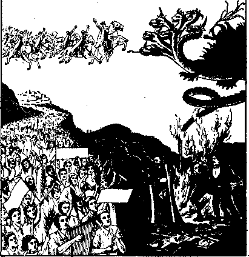
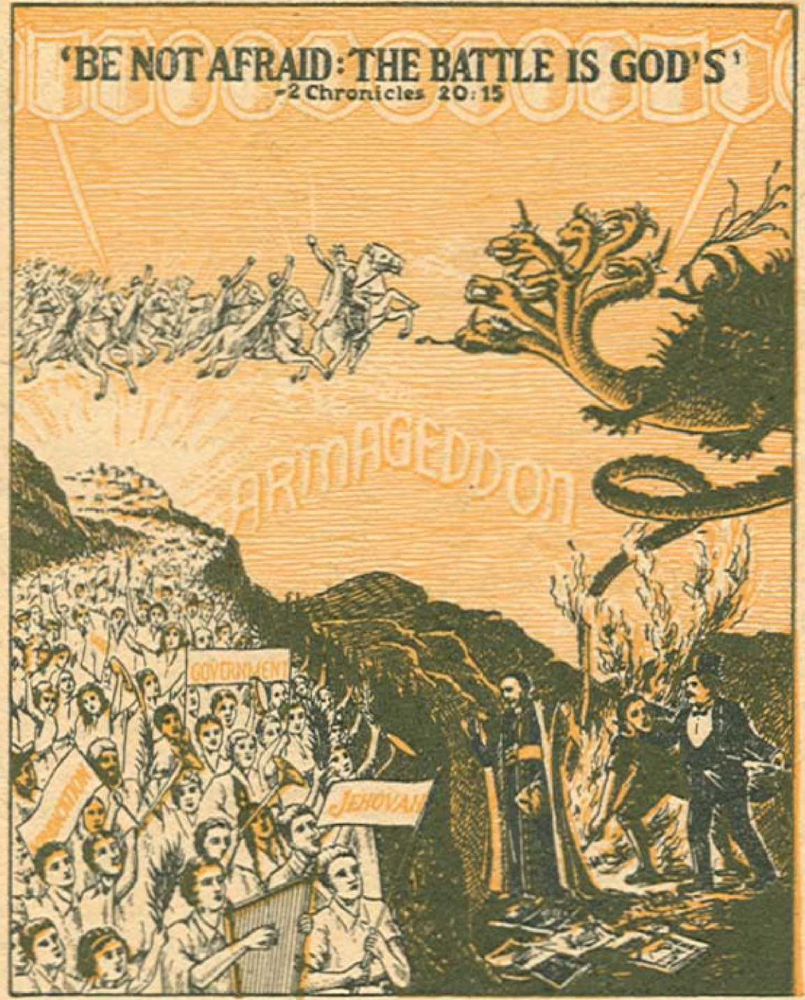
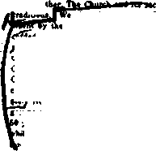
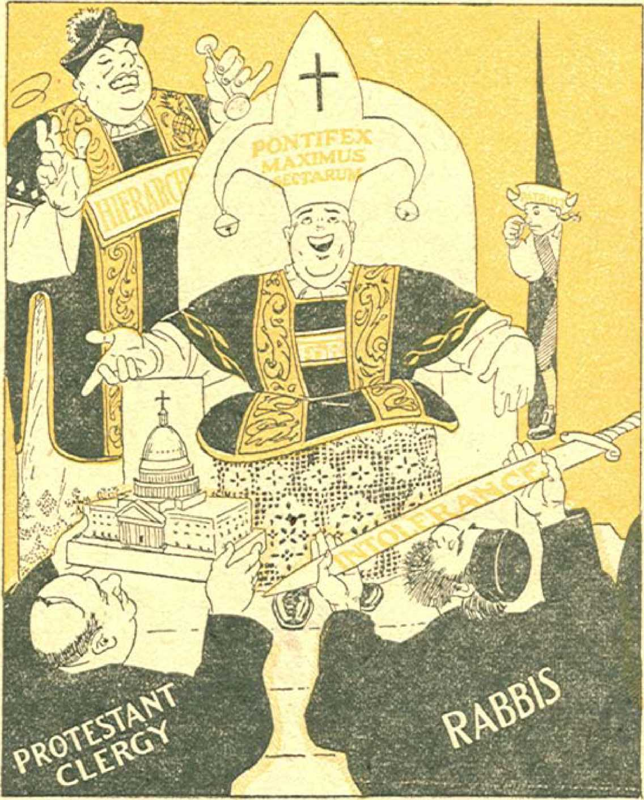

7:30 a. m.
9:00 a. m.


1938
Consolation
Magazine
Jehovah’s Victory in Australia
Steamship Companies Aid Fascists
L’Aurora—New Astounding Revelation 14 Steamship Notes
Counsel by J. F. Rutherford
“Judge, Slay I Have My Title?”
Tobacco More Deadly to Females than to Males
By Trail and Stream and
♦ The horse and mule live thirty years
And nothing know of wines and beers;
The goat and sheep at 20 die
And never taste of Scotch and rye;
The cow drinks water by the ton;
And at 18 is mostly done;
The dog at 15 cashes in
Without the aid of rum and gin;
The cat in milk and water soaks
And then in twelve short years it croaks;
The modest, sober, bone-dry hen
Lays eggs for nogs, then dies at 10;
All animals are strictly dry;
They sinless live and swiftly die;
But sinful, ginful, rum-soaked men
Survive for threescore years and ten!
—Linotype’s Shining Lines.
♦ Mother had mended the young man’s trousers, where he had eaught them in climbing through a barbed-wire fence. Then she tried to locate her son and heir, but could not at the moment find him. Noticing the cellar door ajar she called out, “Say, young man, are you running around down there without your breeches on?” Back came a deep bass voice, “No, lady, I am just reading the gas meter.” And so the lady knew everything was all right.
♦ The codfish lays ten thousand eggs;
The homely hen lays one.
The codfish never cackles,
To tell you what she’s done.
And so we scorn the codfish, -
While the humble hen we prize;
Which only goes to show you
That it pays to advertise.—Exchange.
♦ Felix, in his booklet “Our Faith”, states, “Rutherford always refers to the pope as antiChrist.” Will someone point out one instance where Judge Rutherford has done so? This, of course, is not calling Felix a liar.
The Missing Cashier
♦ “Have you seen the cashier this morning?” “Yes, sir; he came in without a mustache and borrowed the railway timetable.”
CONSOLATION
“And in His name shall the nations hope.”—Matthew 12:21, A. R.V.
Volume XfX
Brooklyn, N.Y., Wednesday, June 15, W38
Number 489
Jehovah’s Victory in Australia
|^™"5STHIS IS the account of Judge | M 11 Rutherford’s trip to Australia and I J his fight for Jehovah’s kingdom on ' many geographic fronts. The battle
was waged against' the enemy in Honolulu, Samoa, Fiji, Auckland, Sydney, and fought all the way back without cessation. Jehovah hailed truths upon the hiding places of entrenched Catholic-Fascists from America to Australia, and their howls went up from Honolulu to the southern tip of New Zealand. The battle was desperately fought by the enemy, but they prevailed not. Through Judge Rutherford the Lord trounced them with such cutting exposures that they were still screaming abuses as the boat left the successive ports of call.
When a man’s one ambition in life is the honoring of God’s name, he has entered fully into the joy of the Lord; whatever then takes place in his career ean bring only contentment and satisfaction. When Jehovah God revealed to His people that He bad put His name upon them, and that they were and are His witnesses, He brought them a joy that will last for eternity.
It is God’s will that the majesty of His name should be proclaimed throughout the earth prior to the destruction of "Christendom”, of which Australia is a part. It is His will that Jehovah’s witnesses, of whom and for whom Judge Rutherford is the principal spokesman, should carry that message thither. And it was His will that Judge Rutherford in person should take to Australia the warning from Him that the time of His vengeance and of His deliverance is at hand.
Necessarily that message would and did anger the Devil’s representatives in the one continent, in all the earth, that is bounded JUNE 15, 1638
* by the ocean on all sides. Those represehta-tives are, first, the Roman Catholic Hierarchy of Jurisdiction, and, second, all Jewish and Protestant clergymen, all of whom have participated in the dishonoring of the name of God for centuries and for generations.
On the 30th of March the S.S. Mariposa sailed from Los Angeles fifteen hours late, bound for Honolulu, Samoa, Fiji, Auckland and Sydney. On board were Judge Rutherford, a secretary, and several companions. Docking at Honolulu on Sunday April 3 the party was met by a group of friends who had assembled. Although they had endured a wait of many hours, they ran forward, with much joy on their faces, throwing leis of perfumed flowers over the head of Judge Rutherford, and then took him and the party to Kingdom Hall, the Watch Tower branch headquarters, in the center of Honolulu.
When he told the friends there of the significance of the Memorial of the death of Christ Jesus it was after ten o’clock at night, , due to the boat’s delay. But the hall was packed with Hawaiian, Japanese, and American witnesses, some with sleeping children in their arms, who had waited there most of the day in anticipation of hearing him speak.
After arrangements for a public talk on the return, departure was made the same night. Just one day later a radiogram was handed to Judge Rutherford disclosing that the Catholic-Fascist group, headed by representatives of the Roman Catholic Hierarchy, ■ were desperately striving to prevent him from landing in Australia and that they were conspiring to prevent his use of the Town Hall in Sydney, where the public lecture had been scheduled,
Although howls against the judge had come
from the Catholic press of Sydney as early as ten days before, March 24, it was about on the date of this radiogram, April 4, that newspapers of Sydney took up the fight of the Hierarchy; and in their effort to heap calumny on the Lord’s cause and His representative, they donated much unintentional advertising.
When later it was possible, to see the newspapers they showed such scareheads as the following; “Move to Ban Ex-Judge7 ’ (Sydney Suit and Gwirdian, April 3); “May Prevent Rutherford’s Lecture,’’ “Cancellation of Town Hall Date to Be Considered” (Daily Telegraph, Sydp ey); “Ban Use-of Town Hall” (Sydney Morning Herald, April 7) ; “City Council Refusal Commended” (Sydney Sun, April 10). Such notices appeared in similar form in all parts of New Zealand and Australia.
A few papers had articles on freedom of speech, for which Australia was once wo.ll kn ow n, and favored permitting Judge Rutherford to speak; but for the most part they spread the abuse which the
ATTENTION PLEASE
J edge Rutherford, who is travelling on this boat, to Sydney, Australia received from the Sydney DAILY TELEGRAPH the following wireless message:
AUTHORITIES REFUSE MAKE AVAILABLE SYDNEY TOWN HALL AND OTHER HALLS FOR YOUR CONVENTION NATIONAL BROADCAST PREVENTED BY POSTMASTERS REFUSAL SUPPLY LAND LINES. WHAT IS YOUR REPLY TO THIS. WILL YOU SPEAK OPEN AIR AS LAST RESORT
(Signed) DAILY TELEGRAPH SYDNEY
At the request of the DAILY TELEGRAPH Judge Rutherford answered by wireless as follows:
FASCISTS AND ROMAN CATHOLIC HIERARCHY COMBINE TO SEIZE CONTROL AND RULE ALL NATIONS BY DICTATORS. THEY SUBTLY AND WRONGFULLY INFLUENCE IHIB-LIC OFFICIALS TO AID THEM IN KEEPING THE PEOPLE IN IGNORANCE OF FACTS. THIS GREATEST CRISIS OF ALL TIME AND THE RESULT PLAINLY FORETOLD IN GOD’S BIBLE PROPHECY. VITALLY IMPORTANT THAT PEOPLE HEAR THE TRUTH NOW. PERSONS OF GOOD WILL ARE ANXIOUS TO HEAR TRUTH. I WILL GLADLY SPEAK OPEN AIR TO ACCOMMODATE PEOPLE. ENEMIES OF RIGHTEOUSNESS CANNOT PREVENT JEHOVAH’S MESSAGE REACHING THE PEOPLE. YOUR' PAPER RENDERING SPLENDID SERVICE AUSTRALIAN CITIZENS.
(Signed) rutherford
Any person aboard who would care to have more information as to why this intolerant spirit is being manifested in Australia by certain persons, please call Mr. Heath at Danai seven.
(Distributed April 12th or 13th to all passengers on the S.S. Mariposa, at sea between Suva and Auckland, N. Z.]
;ti i i 1111 btt-ttif ..........
Hierarchy had coerced them to print.
While this battle raged in Aus-trail a, every bit of which publicity was used by the Lord to forward His work and give free advertising - —for the lecture, Judge Rutherford
received a radiogram from the Daily Tele-i graph of Sydney, which radiogram and the judge’s reply are copied together on a leaflet reproduced on this page. Although the Telegraph feared to publish the reply they had requested, and admitted as much, excellent use was made of the leaflet by distributing it to all the passengers aboard ship.
A late arrival at Suva, capital of the British crown colony, the Fiji Islands, prevented a public lecture there.
At Auckland, a town of about 220,000, largest city in New Zealand, several hundred friends were refreshed by a talk on the Memorial, by Judge Rutherford.
On the next day, April 15, while the S.S. Mariposa sailed the Tasman Sea en route to Australia, and still two days from Sydney, there appeared an article in the Sydney Daily Telegraph stating: “During the trip several Mariposa passengers complained to the purser that they had been rung up and asked to Rutherford’s cabin to hear bis teachings explained.”
This was, of course, an intentional lie, and it is mentioned in this account as one incident of a series which pointed to full co-bp-
eration between the Catholic purser's' office and the bigots of the same stripe ashore. More than ninety percent of the whole crew and personnel of the Mariposa were said to be Catholic. Later events show how servilely the Mariposa was doing the Hierarchy’s bidding;
Meanwhile the battle continued, throughout the Commonwealth of Australia. Lord Mayor
CONSOLATION *
Nock, of Sydney, had banned the use of the Sydney Town Hall, as early as April 6. His reason, based upon allegations of the Finance Committee, was that the Anzac [Australian and New Zealand Army Corps] Day celebrations of the returned soldiers of Australia and New Zealand, occurring at the same time as the scheduled speech, April 24, might cause disturbance of the peace ‘because of the soldiers’ animosity’.
t ! ■ 7 ' : That th is was merely an other f al se alarm originated by the Hierarchy, ; < and used to hammer any spineless
members of the City Council into -line, was clearly demonstrated by a curious incident that occurred at the dock on arrival of Judge Rutherford at Sydney.
As a thousand of Jehovah’s witnesses were shouting cheers of greetings, one member detached himself from the throng and, concealing his identity, went up to a man wearing a “Catholic Action” button, and asked the Catholic what all these people were doing at the dock. The reply was: “They are down here to see Judge Rutherford. There would be some trouble, and he probably couldn’t have landed, but the returned soldiers fell down on us.”
The real soldiers repudiated this effort to protect the Hierarchy’s racket by use of their name. Six hundred of Jehovah’s witnesses, many of whom were returned soldiers, demanded a public apology from the Lord Mayor. “Ata meeting of the Katoomba ex-service men objection was taken to the City Council using the name of the ‘diggers’ [ex-service men] as the excuse for canceling the letting of the Town Hall for Judge Rutherford’s lecture.” (Sydney Morning Herald, April 11)
While on this point the lying y use of the soldiers ’ name is carried : back to the agent of the father of
; , - <lies, namely, the Roman Catholic
" Hierarchy. At the Sydney Sports
' ground, where Judge Rutherford finally spoke to about 25,000 people [at least six times as many as the Town Hall could accommodate], a.Protest was presented by an ex-service man and was approved by the whole audience, many of whom were ex-servite men. In New Castle (Honeysuckle Iron Works) ex-seryice men passed a similar resolution.' (LabourDaily, April 15) ■ ■ ■
JUNE 1B,'l93S *
At Auckland, New Zealand, where the judge addressed an audience of 4,000 people, a similar resolution was unanimously passed, and it was found by a show of hands that over 80 percent of Jehovah’s witnesses there were returned soldiers. As Judge Rutherford so reasonably pointed out: ‘Why should the returned soldiers be against me? They fought to make the world safe for democracy, and returned to find all nations going under dictators. I have told them this.”
This fight of the Hierarchy naturally furnished invaluable publicity. Many articles on freedom of speech appeared, and advocates of fair-dealing wired the government and voiced their criticism of the discrimination on all sides. Jehovah’s witnesses had no difficulty, because of the outrageous action of the council, in obtaining 120,000 signers to a petition of Protest. Newspapers took many pictures, gave much front-page space.
One news film showed a picture in the theaters in which the judge’s remarks about coming to Australia to tell the people the truth were carried with the film; but his statements regarding the combination of the Nazis and the Roman Catholic Hierarchy were carefully censored. Two good pictures, with very fair captions, appeared in Pix of April '30.
To show the volume of publicity it is here recorded that more than seventy articles, good, indifferent and abusive, appeared in the Sydney papers alone during three weeks of April.
Similar news items were carried by papers throughout the Commonwealth and New Zealand, aboard ship, over radio, and several articles even appeared in the carefully censored Times and Herald, of Fiji Island, where the Catholic Hierarchy’s influence has so far succeeded in sustaining a ban on Watch Tower publications.
It was natural and undoubtedly maneuvered by the Lord that the people of Australia desired to hear for themselves what they read so many conflicting reports about. And they came to the Sydney Sports Grounds, and poured into the stadium 25,000 in number! where Judge Rutherford delivered an epochal speech “Warning”.
- > In their attempt to protect a ‘ ■ 7 several-billion - dollar racket, the ' ■ - Hierarchy fought every step of the
: ' way. Their methods are the same
1 ; ■' everyv. here, and only a few exam-
5
pies are quoted to show the vicious endeavor to becloud the issue and blacken the Lord’s cause. A scurrilous article of personal attack on Judge Rutherford appeared in Sydney Truth, whose editor, on interrogation, refused to admit what his religion is (and can you blame him ?); but other people who know him said he is Catholic. Another representative of Rome, acting as vent for the Catholic Press Sewage System, was appropriately named Rumble. These two got their reward for personal attacks.
Others carried on by innuendo, misinterpretation and lies. The Lord Mayor, as reported in the Daily Telegraph, April 14, put locks and guards on the Town Hall and stated to the Press that he hoped no effort would be made to create a disturbance. His attempt to make the public think that violence would be used to obtain the hall was ridiculous in view of the fact that the Sports Grounds, with a capacity of six times that of the Town Hall, was already secured.
Telegrams to the Parliament members requesting that the judge be permitted to give his lecture “ Warning” were construed as threats. The Daily Telegraph, Appl 7, under a scarehead "Followers of Rutherford Talk of Bloodshed”, explains in small type, "The witnesses of Jehovah are willing to see their life-blood shed” for Jehovah.
A reporter for the Labour Daily admitted, on questioning by the writer, that he was
Conversation with Reporter*
Reporter: Yes, we will publish something about your visit.
Reply: This is a nice country, splendid climate, and some very kind people, and some of the other kind. As to the newspapers, they don’t want to tell the truth. They would not tell the truth if it would suit better to tell a lie. They belong to the same crowd that is trying to deceive the people, because they withhold the truth from the people and publish lies instead. Newspaper editors well know that the Fascists, Nasis and the Roman Catholic Hierarchy are in a combine to grab control of the nations of the earth to rule them by dictators. I have made this clear time and again, furnished the facts, which they refuse to publish; and since they refuse to publish these truths, they show they are traitors to their country and to the people, and are delivering them into the hands of the country’s worst enemies. Tell them I said they are traitors and that they have not the courage to tell the truth. You boys will understand I am not saying this to hurt you. You go out and gather up your story, turn it in, and the man that sits back in the swivel ehair blue-peneils it and publishes nothing that is the truth. I do not know what to compare you to. There is nothing that more suits you than that you are a bunch of pimps to a bawdyhouse.
Reporters: Well, we have to make a living.
Answer: That may be true, but I would be ashamed to represent such a cowardly, treasonable crowd. I would rather get a tin bill and pick with the chickens than have such a job.
Reporter’s question: Have you some parting message for the Australian people?
Judge Rutherford’s reply: Why should I give you a message? You would not publish it.
drawing on his imagination when he wrote, April 22, that the judge would speak in the Sydney Domain (the safety-valve publicspeech park, like Hyde Park of London). And April 23 his paper said: "Judge Rutherford arrived in a . . . steelbodied car with bullet-proof windows.” When asked why he made these false statements, he replied: "Well, I had to write something. ’ ’
The significant feature of these newspaper accounts is that the Australians, a pleasure-loving and liberty - loving people who would have had scant time to hear a religious talk came out in the number of 25,000 to hear the answer to this major newspaper controversy.
The whole effort of the Hierarchy, through their hirelings, the newspapers, resulted in stirring up the people’s curiosity and giving great impetus to the work in Australia and New Zealand. It is a sorry spectacle to see the public press, which is dedicated to tell the people the truth, and by inference bound to supply them with news concerning their welfare, and which admittedly knows that the Hierarchy plans to deprive the people of their liberty and by means of avowed or covert dictatorship subject them to the control of a foreign power, yet, because of fear, refuses to publish the facts. A verbatim report of Judge Rutherford’s conversation with reporters appears on thus page.
CONSOLATION
By a usurpation of authority, or rather by a wrongful use of authority, which use of authority was contrary to the Constitution of Australia, the postmaster general refused permission for the use of the land lines (which are under control of the Posts and Telegraph) for the broadcast of Judge Rutherford’s speech “Warning” until he was furnished with a script of the talk. Agreement was made by Judge Rutherford to furnish script for the files but not for CENSORSHIP.
Mr. II. P. Brown, postmaster general, or director general of the Posts and Telegraph, took the responsibility before the Lord of refusing to permit the use of the wires, although a public property, unless he could censor God’s message! He preferred to take liberties with the Constitutional rights of the citizens of the Commonwealth of Australia (for the Constitution expressly forbids interference with free speech or discrimination against any religion), and not incur the anger of the Hierarchy.
This is further evidence that the public officials of Australia have prostituted their office to serving a group whose headquarters are in the foreign country of Italy. The full extent of this betrayal of the people’s trust will be fully realized by the citizens of Australia as a whole only when the Nazi-Catholic Hierarchy begins to purge all protest by execution as in Germany.
Jehovah from on high laughs at His adversaries. The broadcast of the speech “Warning” was not made, for the reason that Mr. Brown, postmaster general, preferred to serve the Hierarchy, and not keep faith with the people; but a recording was made of the lecture, and the lion est-hearted throughout many lands will, with sound-reproducing machines, hear God’s message contained in the speech “Warning”.
Mr. Brown’s efforts bring to memory the attempts of-a few New York policemen to stop the operation of sound cars receiving a former broadcast that was at that very time encircling the globe; and of the soldiers who thought, as they stood guard at the tomb, that they might prevent the resurrection of Jesus 1 Opposition to Jehovah can lead to but one thing: “The wicked will he destroy.”—Psalm 145:20.
At the public lecture April 24, given at Sydney Sports Grounds, upward of 25,000 came clamoring to hear Judge Rutherford give the speech “Warning”. Here the Catholic Hierarchy, in keeping with their practices everywhere, had emboldened a group of Nazis, gangsters, and hoodlums of such ilk, to heckle the speaker, and it is surmised, from the bottles and other weapons that some of these possessed, that their further intention was to turn the gathering into a riot.
In this they failed, and their uncouth remarks Judge Rutherford answered with such stinging and apt retort that the rest of the audience shouted applause. Perhaps because of fear of the sympathies of the people, these hoodlums finally were almost silent; and their few interruptions gave greater fire to a delivery by the judge that even surpassed his speech “'Safety” in Columbus, Ohio, last year.
Apparently with the intention of disturbing the speaker, a succession of airplanes flew close to the stand and continued to circle near the field; but the Lord’s spirit was there and Judge Rutherford was at his best, and, unmindful of the racket above, his clear and ringing denunciations fell upon the ears of an enthralled audience.
Shouts of the hecklers but added vigor to the outpouring of the message and furnished occasion to trim the Devil’s agents. On one occasion, when some ignorant interruption had been made, he turned to the ruffian and said: “If you cannot stop your interruptions I will ask the police to put you out.” Then addressing the audience, he asked, “Do you approve ?” and with a roar they shouted “Yes!” With thunderous vigor he warned of the campaign of the Hierarchy to control the entire world, including Australia, by means of dictatorships, or otherwise called a “totalitarian” government. .
The audience shouted applause at the just condemnation of the action of the City Council of Sydney and the postmaster general to prevent the people from learning the truth as contained in God’s Word. Many individual Protestants, some of which are still left in Australia, approved with shouts of “Hear! hear!” when told that unless the people’s interests were guarded by officials who served those interests, and not the Hierarchy’s, Australian freedom would soon be at an end.
The enthusiasm of an audience of people who love fair-dealing, and had had the principles of freedom of speech inculcated into them since childhood, wildly applauded the speaker, who so boldly warned them of the dangers threatening. More about this later.
At the conclusion of the speech, and almost on top of roaring applause, a returned soldier jumped to the microphone, even ahead of the chairman, and proposed the following Resolution, which the chairman read. He said:
. Mr. Chairman, as a returned soldier, who did military service in the British Army for several years, I desire to propose to this vast and representative audience of Australia a resolution. I ask the chairman to read it and move its adoption. . . . .
“Resolved that :
“(1) This body of Christian people, numbering upward of 25,000, assembled this day at Sydney, Australia, do hereby declare that we are in favor of freedom of speech and unhindered worship of Almighty God, which, have been the well recognized principles of this nation since the time of its' birth. We, heartily join with the 120,000 .persons and more of Australia who recently signed the following protest; . ' -
“ Attempts are now being made to deprive the people of the Commonwealth of their rights as citizens to hear a 'lecture by Judge Rutherford to be delivered at Sydney Town-Had, April 24, at 4 p.m., and relayed by radio to all parts of the Commonwealth. Expense to b& borne by the Watch Tower Society.
“We, the undersigned, emphatically protest against any action being taken by the authorities which savors of Fascism or dictatorship and we petition the Commonwealth Government .to make arrangements immediately for the broadcasting of this speech so that we may hear the Word of God discussed by Judge J. F. Rutherford, an outstanding visitor to our shores.
“(2) We declare ourselves unalterably opposed to Fascism, Nazism, and religious dictators known as the ‘Roman Catholic Hierarchy of Authority’, which combine attempts to regiment all people, arbitrarily rule them by dictators, and to deprive them of freedom of thought, speech and of worship.
' “We are not against the Catholic people, designated by their clergy as the ‘Catholic
8 ’ population*, but we are against the tactics of the ‘Catholic Hierarchy of Authority’, which operates from Vatican City, supports wars' of cruel conquest, resulting in great suffering and death of many harmless persons, and which carries on other subversive schemes. We believe and hold that there are millions of honest Catholic people who are deceived and held in ignorance by the hypocritical practices and wrongful influence of the ‘Roman Catholic Hierarchy of Authority’, and we insist that such honest persons of the ‘Catholic population’, as well as others, have the right to freely hear the truth publicly proclaimed.
“We protest against the action of said unholy combine in their endeavors to induce public officials to prevent the people of this country from hearing Judge Rutherford speak on Bible prophecy. We hold that it is the right of the people to hear what they please and then to exercise freely their own will.
“(3) We vigorously protest against the action of public officials in refusing the use of public halls where the people might assemble and peaceably listen to the speech of Judge Rutherford. Such officials manifestly have yielded to the seductive influence of the aforementioned politico-religious combine and have thereby deprived the people of this country of their just rights to listen to a public lecture.
“(4) We vigorously protest against the action of public officials of the Fiji Islands, and of other possessions of the British Commonwealth of Nations, in preventing the people from obtaining possession of and reading books and other literature dealing solely with Bible prophecy now in course of fulfillment, and which prophecy and facts the people are in great need of hearing and understanding.
“(5) Fascists and Nazis, in utter disregard of the right of others, have destroyed the: n at ion of Abyssinia, seized control of Austria, imprisoned thousands of Christian people in Germany, for having in possession the Bible, and are prosecuting rebellious war against the government of Spain, all of which the Roman' Catholic Hierarchy fully endorses; and now that same unholy combine attempts to force dictatorial rule upon all nations, and against all of which we vigorously protest.
“ (6) We further protest against the action and practice of steamship companies operating vessels upon the high seas in co-operating
CONSOLATION with said politico-religious combine by permitting the ‘Boman Catholic Hierarchy of Authority’ and their representatives to force their practices upon a defenseless traveling public, by daily using public places on such vessels for the purpose of advertising themselves and carrying on their God-dishonoring racket. ■
“(7) We declare that it is man’s inalienable right and privilege to enjoy freedom of thought, speech and worship of Almighty God and that without let or hindrance from any political, religious or other selfish organization, and we call upon public officials to see to it that the people of this country henceforth have and enjoy such full freedom.” It was unanimously adopted.
‘BE NOTAFRATOjTHE BATTLE IS GOD'S ’
Sketch of Jehovah’s witnesses’ Calendar for 1938
■ One jack. ass in the au dienee insisted on being heard at the conclusion of the "Resolution. He shouted: “Judge, I want to ask .you some question.” He immediately regretted getting so much attention to himself, as the judge shortly advised him, “Go ask your priest.” Those near-by who heard shouted, with laughter, at this identification of two jackasses at one and the same moment.
The enthusiasm of the witnesses of Australia, New Zealand, and Malaysia who had assembled in Sydney for the four-day convention, April 22-25 inclusive, was in many ways more inspiring than an American convention, as, for nearly all present, this was their first time ever to see Judge Rutherford. Many of his talks were interjected by frequent expressions of “Hear! hear!”, which meant heartfelt approval. The zeal and activity of the witnesses in this part of the world can be un
JUNE 15,1S38 derstood from their obtaining 120,000 names to the petition of Protest in a few days in which many other convention preparations were laid upon them as well.
Leichhardt Auditorium, where most of the sessions of the convention were held, is situated about halfway between the business center of Sydney and Strathfield (the Australian headquarters of Jehovah’s witnesses), Strathfield being a suburb of Sydney, perhaps six or eight miles distant.
At once striking and unique, in the decorations of the auditorium was a gigantic replica of the Calendar of Jehovah’s witnesses for 1938, which was placed as a background behind the speaker’s platform, and which appears in miniature on this page. It was from this dais that Judge Rutherford, in his farewell discourse, on Monday, well-nigh brought the audience to their feet by dramatically turning to the Calendar picture of ‘burning the . whore ’, displayed there, and emphasized in this manner the fulfillment of how Jehoshaphat and his band saw Ammon, Moab, and Mount Seir annihilate one another.—-2 Chronicles 20.
The convention, coming as it did, just after Memorial and the end of the “Companions” Testimony Period, found the friends eager to add convention work to an already full month. Truly the spirit of the Lord was greatly Upon those who attended, as, besides a great record in. their field service, Leichhardt Auditorium and the Sports Grounds were manned with ushers, decorators, elean-up squads, and radio experts, and the Sports Grounds were served with the finest of publie-address systems by
‘BE NOTAFRA1D:THE BATTLE IS GOD’S
-EChroniclo 20. 15
Sketch of Jehovah’s witnesses’ Calendar for I93S
placing sound-ear equipment to cover every direction from the speaker’s platform.
The lecture itself was advertised by billboards, sound ears, placards and leaflets carried to the people to the number of over one million. This involved much extra work for printing and convention office work, as well as their usual duties, for the members of the staff of Jehovah’s Kingdom publishers located at Strathfield.
Given many talking points by the volume of newspaper publicity, the friends spread over the country of Sydney and environs with sound cars, portable phonographs (which are now being made in Australia), books, booklets and advertisement. Their experiences were joyful indeed, and indicated that Australians were pretty generally indignant at the perfidy of the newspapers and outrageous action of the city council in banning the talk there.
When it was explained that, no doubt, it was the Lord’s will that this ban be permitted in order that larger quarters be obtained, they seemed very glad.
One lady, who had arranged to board several delegates, declared that, on account of the ill-treatment of Jehovah’s witnesses, both by officials and press, to those to stay at her house she would give breakfast free.
Of all things at the convention, from the time of the ship’s arrival, when an enormous crowd swarmed the dock to meet him, and a sound car broadcast melodious welcome as the ship passed up the harbor, and even the customs officer made special arrangements to courteously rush him through, to the last goodbye, nothing was more significant than the way the Australian friends received Judge Rutherford.
Americans can get a fair idea of this enthusiasm by reflecting how they would greet the judge if after reading his books containing the good news of the Kingdom for fifteen or twenty years they should see him for the first time. The love for a fellow fighter for the Kingdom, the devotion of one who so fearlessly expressed what they knew to be the truth, the zeal of the true liberty-loving Australian for a righteous cause—all this shone in their eyes, wreathed their faces in loving smiles, and burst forth in cheers that must have caused a trembling in many evil quarters.
10
There was much oppression in Australia in the early days. Many were exiled there for trifling or trumped-up charges, and thereafter greatly abused, and the memory of this early beginning undoubtedly still lives in their minds; and the spirit of the pioneer still remains among a portion of the people of this antipodean commonwealth; a spirit that has about disappeared in America.
In all, the judge gave three lectures in Australia besides “Warning”. The hearers were refreshed and exhilarated by an explanation of the relation of the children to God’s organization and by being given a fine understanding of the David-and-Goliath picture and the dramatic episode of King Jehoshaphat’s deliverance.
To watch the friends devour the spiritual food which the Lord so graciously provided was almost like seeing them having their eyes completely opened for the first time to the full grandeur of Jehovah’s Word. So, when the time came for departure tears glistened in many eyes.
On the voyage home the same animosity to our party was observed among both passengers and officers of the ship. Copies of the Resolution passed at Sydney were distributed among the passengers and many of the crew. It will be noted that paragraph 6 specifically refers to the Catholic activities on board ship, which offenses, namely, the celebration'of mass and communion, had continued throughout the voyage. The ship generally was pretty hot again after this resolution was circulated. Their retaliations need not be mentioned, but it is sufficient that, as far as Jehovah’s witnesses aboard were concerned, they had discharged their responsibility.
The public meeting at Auckland has been mentioned. On the platform, behind the speaker, were fifteen fine-looking returned soldiers. Immediately following the delivery of “Warning” (which 4,000 people, almost every one of whom was of Scotch, English or Irish descent, applauded with clapping and. shouts of “Hear! hear!”), a Resolution similar to that at Sydney was unanimously passed with a mighty “Aye”. In view of the faet that this meeting was held at noon, this was a remarkably large audience. Later, on the same day, Judge Rutherford addressed a meeting of about 1,000 witnesses, and 'sailed for Fiji.
CONSOLATION
It is difficult to describe how constantly the enemy beset Judge Rutherford throughout the journey. Besides annoying disturbances maneuvered by the ship personnel, he was followed by a Fijian police officer, both on shore and aboard ship, while the vessel was in the harbor at Suva. Considering that the ship was ‘American soil’, this foreign espionage was galling in the extreme.
There seems more than a suspicion that the ship’s officers had some part in the cancellation of the Town Hall in Suva,- which had been rented for a public lecture; one of the officers at the purser’s desk was seen pointing out a member of the party to the Fijian police, and admitted as much on questioning.
The property of another member of the party was held in custody in the customs office, while the official there held conference with a priest; such ill-treatment of Americans was protested in a letter to the governor.
On the return voyage considerable literature was placed among the natives and in the Naval hospital at the American Naval Base, Pago-Pago, Samoan Islands.
Now having been at sea for nearly six weeks, with only a little while ashore, the party arrived in Honolulu. After a public talk by Judge Rutherford there, and arrangements for conventions at Hilo and other points, the party embarked for America. With much rejoicing they landed in Los Angeles, after two months of constant strain of hattie, and thanked Jehovah for their safekeeping.
Though bearing responsibilities such as no other man has borne since Jesus was on earth, and looking after the details of a world-wide organization with a care and consideration that could come only from solemn appreciation of the fact that the work is God’s, and that man at his best can only b^ a servant of the Creator, Judge Rutherford planned more than six months ago to visit Australia and tell the people of good will who might assem-ble'in Sydney what he had found in the Word of God, of greatest importance to them. The trip is long, expensive and tiresome.
Judge Rutherford had no misconceptions that the Devil or any of the Devil’s crowd would be glad to see him come. He knew, and his friends knew, that he has been and is too faithful to his trust to obtain any such reception anywhere. But Judge Rutherford is held in honor by the Most High God, Mid by JUNE IB, 1B3B millions of his fellow men, and it is customary in civilized lands for all to give ear to such, Australia had such an honor.
But Australia today is in bad condition. Not long ago there was a pagan celebration in Sydney styled a “Eucharistic Congress”. It consisted of alleged followers of the alleged first pope, Peter, who warned all Christian teachers to feed the flock of God “not for filthy lucre, . , . neither as being lords over God’s heritage”. (1 Peter 5:2,3) Needless to say Peter never was a pope.
The account says:
At Sydney, Australia, in 1023, the host was escorted for seven miles across the shining waters of Sydney harbor by ships emblazoned in silver and gold.
When Judge Rutherford arrived in Sydney he was not accompanied by “ships emblazoned in silver and gold” which paraded “for seven miles across the shining waters of Sydney harbor”, and would not have wanted it (would rather have rebuked it), but was met by fully a thousand earnest Christian men and women, glad to see his smiling, earnest, honest, courageous face, and to welcome him in the name of the Lord God.
Those that came in Peter’s name were dressed in lace curtains and lingerie, hating the Holy Scriptures and defaming and dishonoring Jehovah God by their every word and act. Their alleged errand was to parade around with a little piece of bread, honor it, do obeisance to it, and glorify it; their real errand was to glorify themselves and promote their racket, the Roman Catholic religion.
When these impostors came to Sydney the Devil’s crowd fell prostrate before them. They were willing to kiss any part of their anatomy, and could and did manifest their servility by falling on their knees and kissing their rings. From pictures published in the papers of the time one could well imagine the whole thing as taking place in the days of Nimrod.
Judge Rutherford wanted none of that; would have despised it; would not have accepted it under any consideration. All he wanted was an opportunity to tell the good people of Australia some of the purposes of God, that they may set their houses in order while yet there is time. The Devil’s crowd tried to prevent that achievement, and they got left in the lurch, as they always do, because they leave God out of their calculations.
—Wm. P. Heath, Jr.
RULE of the people by fanatical dictators is now the great peril threatening all nations. Fascists, Nazis and the Roman Catholic Hierarchy have combined to force such dictatorial rule upon the world. The Hierarchy has become entirely a political organization and what is called “Catholic action" is a well-organized movement’to gain control of the various governments of earth. When that does take place? all the liberties of the people will be taken away and all Protestants and Christians will be cruelly subjected to the old-time Catholic Inquisition and torture. By employing subtle, coercive methods of operation the Roman Catholic Hierarchy and allies are gaining undue advantage over many business companies, which companies are induced to co-operate in destroying the liberties of the people. Judge Rutherford, who travels in various parts of the earth, has carefully observed some of their methods. Recently, while on a voyage to Australia and return, he observed such practices used in discrimination against other passengers and he addressed to the president of one of the steamship companies
the following letter:
May 10th, 1938. Mr. Wm. Rolf, President, Matson Lines;
215 Market St.,
San Francisco, California,
Dear Sir:
This is a friendly suggestion. Having made the voyage from Los Angeles to Australia and return on the Mariposa I express my appreciation of the material comforts it furnishes. I thought to render some assistance to your company but I am of the opinion that officers of the ship did not appreciate my purpose, hence I am writing to you.
Each day-on the outgoing journey two Catholic priests operated in first class and one or two in the cabin class. On the return one priest operated in the cabin class. Each day there appeared in the ship’s newspaper a notice such as hereto attached. This to the exclusion of all other faiths or beliefs.
I am certain that steamship companies in America, including yours, are being imposed upon by religious practitioners and that to your injury. The religious belief of every person is a matter of personal choice, which no one ean properly interfere with, nor should the practices of any religious belief be imposed upon the traveling public. It seems it is wholly uncalled for to daily put under the passenger’s nose a notice of what the Catholic priest is doing. At the same time I am informed that literature of other religious organizations, brought aboard to be distributed,
12
has been deliberately east overboard by officers of this ship.-Such a flagrant discrimination caused me to make some inquiry, and I learn that the stewards are not permitted to attend any religious service except the Catholic. I am also informed that the priests go amongst the stewards and stir up their prejudices against others who are not Catholic. If their operations were carried on in a private room, without advertising their activities, then there would be no discrimination such as now indulged in by the steamship companies, including yours.
I am certain from the facts I have in my possession, and which facts are easily ascertainable by everyone who tries, that the “Roman Catholic Hierarchy of Authority”, operating from Vatican City, Rome, is putting forth a studied campaign of Catholic action and is operating in conjunction with Fascists and the Nazis to gain control of the official affairs of the world. The hypocrisy of the matter is this, that these priests travel on the ships and pretend to be serving God when in fact they are agents of what is generally advertised as “Catholic action” and which action is entirely for political purposes. It would seem that the Hierarchy has an understanding with steamship companies to carry on their practices on all the ships that ply the seas, and which practices are working real and great injury to the steamship companies, and in course of time even greater injury will result from their activities.
CONSOLATION
•1
The Polynesian fosutd Daily m Sm
Today’s Program of Events
Saturday, May 7, 193(1
10:30 a. m.—Continuation □£ Tounjaincnta
4:0u p. n>.—Tea Concert ...........................*......
8:15 m,—Keno Game...................................
■
Lounge f
T ►
Lounge ,
Inclusive Tour of
Honolulu
The S. S, Msripoaa will arrive in Honolulu at 8 a. m. and depun at 4 m.T Wednesday. As an attraction to our through paSMiigtjrj interesting tour about Honolulu j» offered for their entertainment.
Thia consists of a morning and an afternoon drive, the cost for tile complete tour with luncheon at the Royal Hawaiian Hotel, is 38.00.
9:00 p. m,—Dancing
Pavilion
All Clocks Atioartf Ship wbt» Advanced 30 Minutes
-....... ' r-.T
Notice of Change of Destination
Passengers who intend to change t port of disembarkation, particularly r
who intend to change from San Fraud to Los Angeles and vice vena, must immediately so that immigration iti irier at Honolulu may be advised, passengers will be presented today
a "Notice of Destination” card w should be filled in and returned to Purser’s office today.
Liquor Prohibited into Hawaii and California
Week Days Sundays . -
All ith
Tatar x J-
Holy Mass
Until further notice, Holy Mass will be celebrated in the Cabin Class Lounge C*C’T Deck Aft.) every morning, except arrival mornings, at the following hours
(Holy Coin muni on by arrangement with Rev, Fr. T, O’Sullivan, Room oil.)
Exchange Rates
HdyUig—
Australian .......
New Zealand • * . ijian
$3-90
$3.93
34.40
For the morning drive, the tour starts promptly upon arrival and proceeds along the coast past the Kahala residential district, Waialae Golf Course and the U. S. Naval Radio Station at \WaiIupe. Continuing along Koko Head ad the drive passes Koko Head Crater, an ancient volcanic cone. A stop ade at the Blowhole, a spectacular salt} water geyaer. Continue along the ed lava coast Jine to the Waimanalo Haji, overlooking the w’indward side of Island. An ancient Hawaiian high-ay, called Kcalakipapa, or the “Old Kings Highway/1 can be seen as you approach Waimanalo Pali. A side trip is made to the beaches of Kailua and Lanikai. On the return trip, the drive is through a large grove of coconut trees and an avenue of Ironwoods, then
7:30 a. m.
9:00 a. m.
... Recent modi float fort of liquor regulations prohibits the importation of .liquor in'any quantity whatsoever into Hawaii and California except under importer’s license.
/ r 1
Morgan Aware of Whitney Crisis Months Before Crash
NEW YORK—Two man ths before Richard Whitney's brokerage firm collapsed J. P. Morgan knew that the five limes president of ihe New York Stock Exchange was in an awful jam, the financier testified at a hearing of the Securities and Exchange Commission but-added that he had not felt obliged to appraise stock exchange officers of his inside knowledge.
Sterling ................ $4.90
Shipboard Branch American Trust Co. Boat Deck (opposite Radio Room) .
r < *
WASHINGTON—Commissi ener G. H. Payne of the Federal Communications Commission charged that a radiu monopoly is seeking to mould public opinion to its will and urged as the only effective answer the lurig overneeded Congressional investigation of tlie radio industry.
* r *
MADIRD—The heaviest Insurgent artillery bombardment of Madrid in many months spread terror over the city lust night,’the crash of sheik merging with thunder of a torrential rain.
up to Nuuftnu Pali from the eastern side of the Island- Ample time is allowed for a swim at Wfoikiki Beach and also for lunch al the Royal Hawaiian Hold.
-The afternoon drive includes a shopping and sightseeing- tour through down* town Honolulu, returning to the ship in plenty of time before sailing, .
MAKE EE3ERVATIONB AT THE shipboard TRAVEL BUREAU, .
f f f
ALBANY, N. Y-—Assemblyman Nathaniel Mink off, American Labor Party floor leader turned his back on the new National Progressive-Party and announced lie . would continue to support Preside]]! Roosevelt.
Travel from CHICAGO to NEW YORK via
Canadian National railways
and we DETROIT, NIAGARA FALLS, TORONTO, OTTAWA and MONTREAL
' ' (This routing is available [o holders of through tickets to U. K. without extra charge)
In above facsimile, note the article marked. This advertisement of the Roman
JUNE 15,1938 Hierarchy’s racket appears daily in the steamship ’s newspapers, 13
THE OLDEST ITALIAN EVANGELICAL PAPER IN AMERICA ~ FOUNDED IN 1903 PVSUSHKD WEEKLY BY THE ITALIAN BAPTIST ASSOCIATION OP AMERICA
EDITOR Re*. A. Di tauries, R. D. 1414 Osile A*e. PMhddytite Pmayireitia
Entered a* S«flOd cCub mill matter, October 26,1934, at Phil!, Pa. Poat Office, uwkr the Act c( March 3, 1®79
1 SUBSCRIPTION;
I Single Subscription 11-5-1} per year In clubs of lire copies or mor* gl.W per C*P?
1 r'Crei^ti GMOitrfa ud Canada t2.00 per JWT
NEW ASTOUNDING REVELATION
Key. F«ta Patrick O’Brien Declare, the Gtmmmwrt of tie listed Stile* of America u Already in the grip of the Rwm Kkrarcfty. Plans to rtmt JWj bfstiion to Rout all Prote-Aants fa accordance witi the Roman Catholic system in dealing with heretics. Looks for* wart srith assurance of success in btottag out our present Cwrtiwtfoe. It mart he fa keeping with the Canon Law Of thp Church. Retires President Franks, Deluo Roosevelt ml help the Hierarchy out!
Our readers will recall the publication of aletter gent to u$ by the Rev. Father Patrick Henry O'Brien from Syracuse, J$* Y.r which we reproduced in our issue of December 19,1936. In that letter the author said that now the Roman Catholic Church has her representatives at • Washington, headed by Postmaster I General, Hon. James A.- Farley.. *- Recently the Editor has received a second letter from Father Patrick Henry O'Brion, which was mailed from Rochester, El- Y. We reproduce verbatim this ’’precious" document to acquaint our Protest* ant conBtitueucy with the sinister intrigues of the Church of Rome in America^ The present situation m Washington reflect* very clearly the hope and aspiration expressed by Father O’Brien in hi* moment- ■ ous letter. We keep in our safe the hand-written original of thia document ready to reproduce it In fac-simile form if the necessity require* it. The letter follow* ;
R*v. A. Ci Donteiriea First Iteliin Baptist Church Pbitedtljlii*, Pt* *
Uy Mr Sir:
'Wall by thia tim* Act I of our great brilliant mind Pre*. Heoaavalt la being enuted; ho plainly told the Ajoeris*n peep!* and asrml tiCtir* oft the entire world; Jqft. what that Mcrt’Smet In-adtotiei) X fzntn whsnee it darivea it* Power*; who and how tlrey may receive tbair authority, and jnat what our worthy Prefc'dant EXpcCt* them to do and we Th* 'Hierarchy of Lh* Holy Homan Catbulia Church «xpect ell l&yiri children of the Church to urirt the Prcaident with all 1 aur strength to ut that the lodlviduata cotnprijipg the United States Supreme Court ahall obey the Freaideol’s Injunction* and if neceiSary we will change, eotend or blot out the preanit Coailim* tkr* (ondcrtQure it vurs) SO th*t the President may enforce his or' rather OuT hurnanitarixn program oci all phases gf human rights u laid down by aur Saint-, ly F^ts end the Holy 1 Mother the Chureh. For your enUghtmasit may T call your attention to two very fine gunphlet* one uThe Sscrasent of Catho-
.lie Act!qi?’ by Ft. Daniel A. Lord. S. J-, 10 cents published by ’"The Queens Work '3742 West Pine Blvd., St. Loda, Mo. \Seecnd erne, ”Tb* Catholic Church and the Bible by Kev* W. G. Hurley, C- S* P. '(The Pauli st Press, N. Y. ' The Bret, phismphlet tella you plainly jure what we Catholics expect and are going to have ft too; you aee >0 are out in the open ’about ererythlng; w« ere going to have ' our Laws made end enforced according ‘to. the teachings of our Holy See and the P&gec end , Canon Law of the papal Throne; our entire Sonal structure TfiiLBt be rebuilt on that b*si«. Our Educational Lawa must be so .construed t*> the end that atheism, tha Rod Peril of all Hath* ering iSfiU'PnteStantiam, ConuDuniato, Secialism (strange that be. doea not enumerate Fascism among the I«riS) and ill ether* i)k and atimp be driven out of this fair land; the cross was planted On Gur shares by a Staunch, loyal Roman Catholic; this land belongs to us by every tight, lang enough Xve we compromised cu every.important question, now we deraend what ■* really Our* and we *re going to have it* We wDI support Cur President in every way to obtain it, peacefully, honestly if we may; it d«ct** aafy w« ur rO*dy to fight anddie-for it (underscore is ours). We will have none Russia, Spain npr Mexico hers; we want a Cabinet Ifembers, Children of tb* , Holy Mother Church holding important poidtioiiS io the entire Structure of oUr GoVetliiDonL W* will respect th* Jewish religions traditions; but from naw on the Pre tea tent barest** wilt receive th* treatment eaeribed to th* Protestant heretiu, a* prescribed by Our Canon Laws, especially Hum Who like you w*y* baptised Into our Holy Chureh end for ID pi*c«a of Judas silver hrre dreerted th* rank* and are now preaching heresy thereby misleading other ignorant* eetrey; do you ov*r think of your end, preaehing God’s Word, ite one bu a right to preach, taacb, fergteo sins but U>mb who have genuine Apostolic Suceauloit and that alone la found In th* Roly R*7 □tan Catholic Church, 1 also told yon flor saintly F. Coughlin k^ew what to d» at the proper time. Old you hoar his new program last night? have you any of your Creck-Pot Preacheri that eom-' ParejrifX thia bright udad, Hg ancugh,.
broad oueded, yet bonaitCy luyii to thei we do Bat have in our little paper. r«d I However, we Cannot let these
Holy Mat ditiom
e elaetod our worthy Pre-l1 things go by without saying some* a areatest majority «?•: re-, thing to this "'holy1’ gentleman to cfiyed .iti historyare retdy pr«J show him that Proteatantium is not AM fur mo jjriTfl would be w«ll fur l go dead as he considers it to be. Ha th* tniiJiorLtire* ah exploiter? af'j says that ho is old. Probably it is God’s rioor to hoed the warn/g and abeyj, due-to his old age which drags him God's law* or at) their wealth will fee : to dream drcams, but we can as* eomeripted in jh* Interest of elljiir peu-jt sure him that his are only pipe tfe.Z Nd'longer will'we tolerate *rrt,tani. dreams which can be dreamed only groups ta ]uep 90% of Cad'a children by a feeble old man's mind.
Hierarchy or Stamped out entirely. Do. ■y*3u think the different Loan Sharks and Industrial Bank* incutportted under ape* - clsI Laws enacted at their behest and in* - fluenc* earning from 30 te 300?$ usurp.
out profits when the. Canon Law of our -Holy Mother Church expressly prohibit! Such practices and telU its children they sre not obliged ta repay any of these monies And we propose to abolish such Companies or Banks. Ch yea, I cah h**r yos shouting “the aiily vaporing* of an Iqaane mind" the l&at. retort of alE Cowards, but Just remember this please far years I here preyed te see thia day. I am an old man and believe I im the oldest Priest in ye^rs of service in the U. S- A. 1 «m accustomed to having people falling q« ‘‘Crasy oLi fool1' " in his dotage" W« Americans will never •ttnd for thi* and that. £ Cam* from fhe lai* of Saints as a young Pritrt, thank God I hive lived long enough to sc* tbea* wonderful changes; Oh yes In Puritan Boston t:waa hung ft effigy by your bln* Aoead Piety Hill Puritan* to dap! True cahtrcl Miaeachuserts we cootrol America and don’t prupre* to
< atop until Amrioa or Th* Americana are genuinely Catadfc and remain ao God help ua.
Sincerely ydm in Christ Jesu, Father Patrik A*tuy O'flriea.
Tp cctrimEnt iti details Alia extraordinary document of "Father" Patrick Henry O’Brien, would re* quirt ji gr«at_d»al of apace which
o yOtk flr avor in a stete oi Pauparism, However, - "Father1 r O’Brion, be*, >k they under/he guire of Lw» rctht iag a ptfe-tf, echoes the VOLCC of th®! taugli iar£« nwnopaiiw, iJietalty eon-}t hierarchy of his "Holy Roman, ducted >nd maintained. I say all such jGhurch" which, in a relentleaa way,1 Iiutitrticiiu whether Bantu, Loan Com-!’^ trying to- gnaw the very life of Hftire or other ennctnn mut ba Mpad 4UT American government. Even .out or pfaded uiidar tha praUction of our the .blind car. seo the pernicious Roman Catholic propaganda which is going ou in America and especially in Washington, D. C. The venerable gentleman declares it orenly!
Now let us analyse the prose of "Father" O'Brien and see just what his hierarchy expects to do in America.
He says that "all loyal dilldrai of the Catholic Church are to assist our 'worthy President* with nil their strength to see that the uidi*. vidual comprising the United States Supreme Court shall obey the Prebident's injunction* and if ne* effaqary will change, amend or blot out the present Constitution so that the President may enforce his or rather oar humanitarian Program on all phases of human rights as laid down by our Saintly Popes of the Holy Mother Church."
Evidently "our worthy President” is doing the very thing which "Father" O' Brien advocates in changing or blut out the Constitu-' tioa of the United States, begin*, ning with the Supreme Court. W«; •wonder just how much pressure Jim Farley ia exercising upon the President to enable, the Roman: Hierarchy to blot out of existence the Constitution of America. In regards to the "Saintly Papes" that the Roman Church, has .had we ajl, know that, quite many of theml
Seeing .the subtle method? employed by Fascists and the Hierarchy to run rough-shod over inoffensive people, an assembly of 25,000 Australian citizens at Sydney adopted a Resolution, copy of which is herewith enclosed. A like Resolution was recently unanimously adopted by approximately 4,000 people assembled at Auckland, New Zealand. The people are being informed of the crooked methods of the Roman Catiiolic Hierarchy and Fascists and I opine that they will call attention to the matter in no uncertain terms from now on. There are millions of honest and sincere persons amongst the “Catholic population” and, of course, what is said here is no reflection on them, but they, together with others, are being deceived by the political, deceptive and underground methods employed by the “Hierarchy of Authority”. Steamship companies of America, as well as others, should awaken to the danger now threatening the institutions of the earth. Fascism is growing rapidly in America and the Roman Catholic Hierarchy is doing more to increase Fascism than any other thing in America. If that, radical organization, together with the Hierarchy, continues to push their schemes unhindered, America will soon be in as bad or even worse condition than Germany and Italy, and the financial institutions, as well as the political, will go to the pot. It is unbelievable that business men, such as operate your company, wish to be even indirectly made a party to a nefarious scheme carried on under the cloak of religion, but which, in truth and in fact, is political, the purpose of which is to deprive the people of America of their liberties and to rule the nation by a dictator.
Why should steamship companies find it necessary to constantly carry Catholic priests, the agents of the Hierarchy and Fascists, and advertise them daily in their papers, and at the same time ignore every other faith or belief? I am convinced that the Hierarchy has obtained undue advantage of business men by some methods and which that organization employs with greater effect than any other.
The officers and many of the crew of the Mariposa seem to be under the dominating control of the Hierarchy, and which catlses them to discriminate against non-Catholic people who travel upon the ships. Your duty as an American citizen is to see to it that no foreign, political power or agitators, such as Fascists and the Roman Catholic Hierarchy, are permitted to use the facilities of your company to destroy the liberties enjoyed by Americans. You cannot afford to let this practice on your ships continue without giving it due and proper consideration, and I am sure upon a fair investigation, if you regard your duty properly towards a traveling public, you will cease to force the Hierarchy’s practices upon others who use your ships. Doubtless you have not even stopped to consider that the Roman Catholic Hierarchy, by causing its agents, namely, the Catholic priests, to travel continuously on the boats, is for the very purpose of furthering their political schemes. You surely would not wish to jeopardize your own business interests. Above all this, their operations are dishonoring Almighty God, although they pretend to be representing Him and the Lord Jesus Christ, and under that cloak carry on their political activities.
Your ships furnish splendid traveling conditions for the public and should be enjoyed by all without discrimination against any. And believing that you are unaware of such discrimination I am taking this occasion to call your attention to it, understanding that a friendly criticism is always desirable. I am certain if some one was regularly carrying on a gambling game upon your ships that you would stop it quickly. The practice of the Hierarchy’s representatives on the ships is far worse than gambling.
May I suggest, therefore, that your ships put in practice rules that represent equality toward all and partiality toward none. I hope you receive this constructive criticism in the spirit in which it is sent, and also that you take notice of this warning against the great and threatening danger to American institutions.
Be assured, my dear sir, of my best wishes. Very respectfully,
124 Columbia Heights, Brooklyn, New York, U. S. A. P.S. For convenience I am sending a copy of this letter to the chairman of your Board of Directors.
That the purpose of the Hierarchy and allies is to destroy everything that cannot be controlled by that unholy combine is indicated by the language of
JUN.E 18, 1938
15
the Catholic priest, Patrick H, O’Brien, whose letter is published in the April 3 issue of LJ Aurora, in which he says: “We elected our worthy President by the greatest majority ever recorded in history. We are ready prepared for 1940 and it would be well for the millionaires and all-exploiters of God’s poor to heed the warning and obey God’s laws or all their wealth will be conscripted in the interest of all our people.” (See page it of this issue.)
♦ The old adage “Britannia rules the waves” now gives way to “Ratti rules the waves”. Here is a beautifully gotten-up folder of the Hamburg-American Line-North German Lloyd, boosting the Roman Catholic Hierarchy, and explaining how easy it is to be on the side of the pope and on the side, of Hitler at one and the same time.
The booklet contains nine full-page pictures of Roman Catholic “altars” as furnished for travelers on the Europa, Bremen, Hamburg, Deutschland, Hansa, Columbus, Berlin, New York, and St. Louis, and carefully refrains from mentioning Protestantism in any way, because between Ratti and Hitler Protestantism in Germany is dead as a doer nail. Vestments and all other requisites for the dishonoring of God’s name are provided; there are crucifixes on board which may be placed in the state rooms. “Altar” linens, “hosts,” wine, candles, incense and “holy oil” are supplied by Roman Catholic priests at Hamburg, Bremen and New York; the ships carry Roman Catholic organists and sacristans; the ship management looks out for the Roman Catholic days of “Fasting” and “Abstinence”, and everything is done as Mr. Ratti and Mr. Hitler would wish. It is a good piece of advertising, 12 pages in three colors. The silver cross on the outside front cover is surrounded with a very effective purple haze. The title of the-booklet is “Ship’s Altars”, and definitely marks the pope’s taking control of the ocean.
Newspapers that never willingly publish a truthful or favorable statement about the extensive work done by Jehovah’s witnesses devote one or more columns to inanities of chapels, “altars,” vestments, chasubles, burses and other religious junk that is supposed to be necessary in “ministering to the spiritual needs of passengers ’ ’. Such columns of drivel
16
are generally found in close proximity to the pages devoted to advertisements of steamship lines, and thus assist in giving publicity to the steamship companies that in turn give publicity and support to the religious racket.
♦ During the World War the United State? was cajoled and coerced into building hundreds of vessels of a type that would never be of the least use except to take soldiers and supplies to France. As a consequence, when the so-called “American merchant marine” was reconstituted it was one grand fiasco. Now the president wants to reconstitute it some more, pointing out that last year, except for oil tankers, there was not a single sea-going vessel of the passenger, combination or general cargo-carrying type under construction in an American shipyard and not a single seagoing ship of the general cargo-carrying type had been built in America in fifteen years.
♦ AH cargo vessels will now be fitted with automatic SOS signaling apparatus, which will work while the ship’s radio operator is sleeping. As soon as some ship in distress sends forth its signal, the automatic devices on all the ships within reach will immediately begin ringing bells and dashing lights until the ship's management does something about it.
♦ The inside passage from Seattle, Washington, to Skagway, Alaska, over a thousand miles, is as land-locked as a canal and might easily be mistaken for a large river. Snowcapped mountains rise from the water’s edge on each side: there are hundreds of islands. There are but two comparable inside passages in all the world; one along the shores of Norway, and one along the shores of Chile.
conbouavion
Counsel
Totalitarianism is a government wherein all powers are centered in one dictator. Communism, Fascism and Nazism are all of one and the same kind, but appearing under different names. Russia, Italy, Germany and other European countries are thus ruled by dictators. The purpose of totalitarianism is to regiment the people and put the state forward as supreme over and above Jehovah God and Christ Jesus. The facts show that in those dictatorial governments the freedom to worship Almighty God is denied.
Religion, commerce and politics are combined or formed into a conspiracy to establish such dictatorial rule in all parts of the world. The London News Chronicle recently published a map showing that almost all of Europe has fallen away to totalitarianism and is therefore ruled by selfish dictators. The British Commonwealth of Nations and the United States of America are next in line, and the purpose is to rule these countries by dictators. The religious wing of -the confederacy is led by the Vatican at Rome, and almost ail religionists, being ignorant or blind to the real purpose, have fallen under the influence of the Roman Catholic Hierarchy and are supporting the totalitarian movement. The “Catholic Action” movement in America has for its sole purpose the control of the American people and government, and to that end that ultrareligious organization brings into its fold leading financiers and politicians of America. Note the following, both bearing the same date, showing that politicians and financiers are being flattered by the pope.
“Vatican City, JIarch 8. A Vatican City news service today announced that Pope Pius had made J. P. Morgan and Thomas W. Lamont, of the Morgan banking house, knights of St. Gregory the Great.”
“Washington, March 8, The apostolic delegation disclosed today that Alfred E. Smith JUNE 15, 1*38 has been elevated by Pope Pius XI to tljie rank of papal chamberlain of the <_j.pe and sword, A Catholic spokesman said the honor made Smith, 1928 Democratic presidential nominee, a member of the pope’s personal household. The honor was conferred on Smith for ‘outstanding service’ as a Catholic layman.”
In the book Rome Stoops to Conquer, page 13, appears the following: ‘ ‘ Does the Church intend, should the power be hers, to change and modify the Constitution ? Does she mean to discard the American principle of the separation of Church and State? In fine, does she aim at being the established church of the United States? One cannot doubt, in view of the present Pope’s teaching, which indeed is simply the reiteration of age-old Catholic doctrine, that the answers should all be in the affirmative, ’ ’
Some men in America, high in the political affairs, see the danger of Fascism, or totalitarianism, and among such is Harold L. Ickes, Secretary of the Interior. In a public address of February last Mr. Ickes said: “Totalitarianism, either of the right or of the left, is alien to the spirit that dominates the Englishspeaking democracies of the world. ’ ’ He said: “Totalitarianism is subversive of the ideals upon which our democracies are founded.
“Those of us who continue to believe that it is better to be governed even badly by ourselves than to be well governed ]oy others, must be increasingly alert, especially against insidious Fascism. It seems to be that Fascism constitutes the greatest threat in the world today,
“To my way of thinking, Fascism is a retrograde movement. It means a turning back of the hands of the clock. It means that liberty to live one’s life, with only sueh restrictions a:', are necessary in order to assure the equal liberty of others, must be surrendered to a dictatorial power which will think and act for all.”
Fascism is the final scheme of the Devil to turn all men away from Jehovah God and plunge them into destruction. Do the Scriptures foretell the formation of this combination and what will be the end thereof? This ,1 expect to answer in a subsequent communication to Consolation.
......17
.IT IS written: “AU their works they do for to be seen of men, . , , and love ... to be called of men, Rabbi, Rabbi. * ’—Matthew 23:5-7.
Thus spake Jesus of Nazareth
concerning the religious roosters of His day. They believed in self-praise. They delighted to have prominent positions at all public affairs, and they let it be known to aU people far and near that they should be called "Rabbi, Rabbi”.
So it is today. The clergy have adopted and acquired for themselves a string of titles. They love to be called “Reverend”, “Right Reverend,” “Most Reverend,” “Eminence,” “Holiness,” ete., etc., etc. They resent being called “Mister” like the ordinary male person.
Consolation here presents a few instances of the inordinate vanity and desire for praise by these professional religionists.
Let us go first to the municipal court of the Town of Cheektowaga, a suburb of Buffalo, N.Y. The case against one of Jehovah’s witnesses (Joseph Banasik) is being tried. Paul C. Hoffman, minister of the Reformed Lutheran Church, has been subpoenaed as a witness for the defendant. The defense attorney calls: “Is Mr. Hoffman in court?” A black-garbed person "rises from his seat in the front of the courtroom and speaks: “I don’t know whether I’m the person you want; my name is Reverend Paul C. Hoffman.”
As “Exhibit 2”, the case of Mr. H. E. Peters is presented. This pastor of the Universal ist Church in Floral Park, N. Y., was subpoenaed as an expert witness for the defense in the ease of The People of the State of New York against William E. Johnson, one of Jehovah’s witnesses. The defense attorney asks, “Is Mr. Peters in court?” Again a black-garbed person rises from his seat in the courtroom and walks to the witness chair and, in response to the attorney’s question, states: “My name is Reverend H. E. Peters.”
And now, in the same Floral Park ease, comes “Exhibit No. 3” in the 'gracious’ person of the black-garbed John P. Skelly, assistant pastor of the Roman Catholic Church of Our Lady of Victory, Floral Park. Following is an excerpt from the record of his testimony, answering questions propounded by the de-4 fendant’s attorney;
18
“Q. Your name and address?
“A. Reverend John P. Skelly, 2 Laurel Parkway.
“Q. What is your occupation, Mr. Skelly?
“A. Father Skelly—(addressing the Court) Judge, may I have my title?
“Q. How would it be if we call you doctor? “A. No, sir, my title is Father.
“Q. You don’t want to be called Mister? “A. No, sir—. Judge, may I have my title? “Q. You are, of course, not my father— “The Court (interrupting) : lu the courts we cannot recognize titles. That privilege will have to be foregone. This lawyer may have some religious scruples and he is entitled to take the position that he is taking for religious reasons. Under the Constitution we cannot compel him to subscribe to any particular kind of religion. It is not necessary to address the witness in any way; just ask him questions. ’ ’
How true it is, as Jesus said, that these self-designated “reverend” gentlemen are concerned entirely with their own importance and exaltation. Pathetically and infantilely they cry out, demanding praise and laudation of fellow human creatures. Although addressed by fellow humans with ordinary and common respect and courtesy, they are unsatisfied, w-a-n-t more, and childishly wail: “Judge, may I have my title?”
But when it comes to ‘crying aloud’ (Isaiah 58:1) in the public interest; or ‘barking’, after the manner of the faithful watchdog, to warn of approaching danger that men of good will may properly meet the situation (Ezekiel 3:17-21), these lovers of titles are silent as the tomb, dumb, even as such “Dee-Deeze” are aptly portrayed in Holy Writ at Isaiah 56:10-12.
Alas! Alaek! And, forsooth I It’s just the echo; “Judge, may I have my title?”
♦ The United States has 250 colleges teaching the subjects of radio speech, writing for radio, radio dramatics, program production, television and engineering, and yet there are only 691 broadcasting stations in the entire country.
CONSOLATION
An Italian Christian, Daniele Battisti, writing in II Testimonio, sets forth the differences between the Last Supper and the mass in Catholic churches. The Supper was eaten in a house. In the primitive church this was ordinarily so. (Acts 2:46; Romans 16: 5; 1 Corinthians 16:19) The priest, when saying mass, requires a temple, imitating pagan usage. In the beginning of the fourth century Pope Sylvester introduced the consecration of churches and altars.
Jesus reclined at the Supper. The priest stands at mass. Jesus reclined at a table. The priest stands before an altar. Jesus took the meal with others; the priest, alone. The Last Supper was in the evening; mass, in the morning. Jesus wore his usual clothing. The priest is sumptuously arrayed. Jesus took the bread and wine after the meal. The priest eats fasting. Jesus used the ordinary unleavened bread; the priest, the host.
In the church of Byzantium the host was a round cake; in the Syriac church also. Roman, Coptic, Abyssinian, Nestorian and Marovite churches used similar oblations. According to passages in Livy, Suetonius, and Cicero, the pagans often sacrificed (in addition to annual sacrifices) little circular cakes to obtain forgiveness of sins. This was made of fresh flour and was called “ostia”, or the host. Cicero, in Chapter 3 of De Natura Deorum, says the priests believed that in eating the ostia they were feeding on thedlesh and blood of their gods. “Whoever founxl a race of men so little intelligent, ’ ’ he continues, * ‘ as those who think that which they eat can be their gods?”
Jesus took wine at the Supper; the priest, wine mixed with water. Jesus spoke out loud; the priest, softly, so that certain passages in the mass are called ‘ ‘ Secretae ’ ’. Jesus spoke; the priest reads. Jesus’ words were in the vernacular; the priest’s, in a little-understood tongue. Jesus did not move about; the priest ‘ at mass is so mobile that scarcely a member is still. Jesus never signed the cross; the priest crosses himself a thousand times as if assaulted by a legion of devils.
Jesus offered the bread and the wine to the apostles. The priest, feigning to offer it to God, consumes it himself. Jesus faced His disciples at the Supper. At mass, the priest turns his back on the congregation.
JUNE 15,USS
♦ On account of its claim to perfection the Roman Catholic organization would inevitably defend its Inquisition practices. It will be of interest to some to observe the language in which this is done, taken from a Catholic school history, Afodern World, section 325, pages 345 and 346:
It is evident that something like the Inquisition is a necessity for the Church, unless she is to neglect utterly her duty of preserving unchanged the teachings of Christ. In fact every “religion must, by some board or committee or assembly, or by some individual officer, or by the general vigilance of the members, watch over the integrity of the body of doctrines to which it has decided to adhere. And as soon as an actual case turns up, the transaction will of itself assume the nature of court functions. Some spiritual or temporal penalty, too, must be inflicted, if the whole proceeding is not to be an empty farce. It is therefore only natural that in the course of time the Church came to organize a regular “Tribunal of Faith.”
The peculiar shape, however, which this tribunal took is due to the nature of the times. “The political and social development of the Christian world,” says a non-Catholic historian, “led with almost automatic precision to the establishment of . the Inquisition,” It was the product of its age, . . ,
(1) The accused never found out the names of those who either had reported him or had given evidence against him. But those who prescribed this method knew it would appear incongruous. They considered it necessary to take away all risk for such as might feel bound to give information . . .
(2) The use of the rack in order to extort confessions was taken from the Roman law. . . .
(3) The prisons of the Inquisition were as a rale much better and perhaps in no case as bad as wpre those dens in which criminals were detained by secular potentates.
♦ In the year 1936 the Roman Catholic ' church of the United States and its possessions obtained a total of 62,062 converts. They added 1,399 priests, making one priest for each 45 new converts. Births increased the “Catholic population” by 374,019 more. The Catholic population of the archdiocese of New York showed a decrease of 50,000. The Hierarchy constantly boasts of the millions of Catholics, but the whole institution is a hollow fraud, because built upon lies. In Armageddon it will disappear like a snowflake.
19
The “Reverend” Charles E. Jaynes, Jr., the seven-year-old “evangelist” who has been making such a fool out of New England people that on one occasion 15,000 persons eame out to hear him at Boston, lectured to 150 persons in blase Brooklyn and made no hit whatever. It is admitted that his mother wrote his “Heaven and Heil” sermon, and probably all the others, and that young Charles merely committed the same to memory. When he slips, his mother prompts him. The whole thing is a swindle, and a work of the Devil. The boy has a gift of gab, an A-l bluff, and a good memory, and that is all. Boston was intelligent, once.
♦ If meat were served on Friday at a school lunch and a child refused it for religious reasons, nobody would think of objecting. If leavened bread were served at that lunch on the Feast of the Passover and a child refused to eat it, on religious grounds, nobody would think of objecting. But if a child who belongs, not to a large religious group, but to a very* small sect known as Jehovah’s witnesses, refuses on religious grounds to join in the flagsalute exercise, people not only object—they *expel him.
That such a law exists in Massachusetts, of all places, shows that it not only can but has happened here. This commonwealth was founded amid incredible hardships by a handful of small townspeople seeking religious freedom. Most of our citizenship today is derived from persecuted minorities of one kind or another seeking that freedom of worship as their conscience told them, which is guaranteed to them under both our state and federal constitution.
To protect this sacred right the Massachusetts Civic League has introduced a bill—Senate 315—which would enable school committees to exempt from the flag-salute children whose religion forbids them to join in such an exercise. These children are not disturbing the peace or interfering in any way with the rights of others. All they ask is that the same tolerance be extended toward them. To deny it to them seems a particularly cheap form of bullying.-Hingham Civic Leader in Boston Herald.
20
♦ The hour and minute hands of a clock are together at twelve o’clock. When is the next time they will be together ? This problem can be worked out in three ways: by analysis, by proportion, and by algebra.' The answer is, in 65-5/11 minutes, or, at 5-5/11 minutes after one o’clock.
What is the most beautiful thing in the universe? A little girl answered, “My mother’s face.” Is there anything more beautiful? Yes. What is it? Read my report card below and excuse poor writing, as you know I am 92 years and 5 months of age.
Everything pertaining to Jehovah is infinite. Light, traveling to all eternity, can never get beyond the center of infinity. Jehovah has always lived in the center of infinity, and always will. “For thus saith the high and lofty one that inhabiteth eternity, whose name is Holy.”—Isaiah 57 ; 15.
His attributes are all infinite: life, light, glory, love, wisdom, power, justice, mercy, beauty, harmony, joy, peace, and everything else desirable. Is there not an infinite number of mysteries yet to be revealed ? What little we know about this world is proof of it. JTow light, heat, electricity, gravity, magnetism, were created, and for what purpose.
Is it not astonishing that intelligent creatures, made in God’s moral and intellectual image, should be so deceived by the Devil (see John 12:40 and 2 Corinthians 4:3,4) that they refuse to love su^t a Being, on whom they depend for'life and everything else?— when His purpose is to make all His creatures * just like Himself, according to their capacities; when His purpose is to fill infinity with happy worlds. “Of the increase o+’ his government and peace there shall be no end,”— Isaiah 9:7.
All He requires is ‘‘to do justly, and to love mercy, and to walk humbly with thy God”, (Micah 6:8) Can you imagine anything more reasonable than to love God supremely, and your neighbor as yourself? That means: try to make everybody around you happy ; that means everybody and every thing growing better and better for ever.
This is just as true as the Bible, and everybody living will know it by experience in the very near future.—E. B. Haynes, Massachusetts pioneer.
CONSOLATION
De Madariaga’s Beautiful Plea for Peace y’i’y ••••• Iii a beautiful plea for peace in !,i. Spain, sent by wireless to the New
UA : /■ York Times from his home in Swit-
: ; zerland, Salvador de Madariaga, ambassador of the Spanish Republic to the United States, urged his fellow Spaniards io stop the civil war and come to peace with one another, because Spain is being destroyed, and only foreigners will reap any possible benefits from the conflict now devastating the land. In one place he said:
To be sure, one side is fighting to free Spain from what it sees as tyranny, the other from what it sees as anarchy. But is there worse anarchy and worse tyranny than those implied in civil war? Let them bear in mind the appalling host of the dead and the still more appalling host of the living, for ever spiritually maimed by what they have suffered, seen and, worst of all, done.
♦ President Roosevelt was panned, and justly so, for causing to be rushed through Congress a one-sided neutrality measure which discriminates against the legitimate government of Spain. Under international law and by custom and by American practice, the Spanish government has the right to buy in America the things which it needs to defend itself against Fascism (Catholic Action). In rushing through this legislation, Uncle Sam played directly into the hands of the Roman Catholic Hierarchy and that of the British Foreign Office, which the Hierarchy controls.
Imaginary Government Receives Envoys ♦ General Franco’s imaginary government was recognized by the Italian and German governments’ sending envoys to him. All it amounts to is a recognition by two outlaws, two murderers, of a third one. But it has the pope’s “blessing”. And that is something, isn’t it? Incidentally, the pope himself, another murderer at heart, officially recognized ihe Franco government, on May 16, 1938.
♦ Herbert L. Matthews, correspondent of the New York Times, claims that Italy was tipped off in advance and that some of the Italian planes left Italy for Spain the day before the “rebellion” started.
JUNE 15, 193B
Huge Hailstones in Spain
♦’ A note from the Madrid (Spain) office enclosed a clipping from El Debate., newspaper of that city, showing that at Tarbes, on the northern slope of the Pyrenees, a violent cyclone raged in which hailstones over two pounds in weight fell in such great numbers that roofs to the number of 1,500 were completely destroyed. How easy Armageddon will be for Jehovah when Ills time to strike shall come!
♦ Visiting Spain for the purpose of an independent investigation, a committee of six from the Church of England, the Methodist church, and the Friends, stated they found no evidence of any anti-God propaganda whatever, and that their distinct impression is that if the Catholic church would cease its improper political activity the toleration of religion would be assured,
♦ Taking note of the fact that the Spanish bishops endorsed Franco’s rebellion against the Spanish Republic, 150 Protestant ministers dug up the folio wing statement -which the same bishops signed in December, 1931:
The Church never fails to teach submission and obedience as due to the constituted power, even when those who hold and represent that power use it in abuse of the Church.
♦ The prophecy of Zechariah 13th chapter is gradually being fulfilled. At Madrid, on Easter Sunday, one of the prominent peanut peddlers was a gentleman formerly a priest in one of Madrid’s largest churches, now earning an honest living, and no longer participating in the “great institution” which lives by dishonoring the name of the great Creator, Jehovah God.
Eating Laboratory Animals Not Injurious ♦ When the Moorish troops, fighting with Franco’s army, got to the University grounds, on the northwestern corner of Madrid, they ate the University’s laboratory guinea pigs, chickens and rabbits which had been infected ■with cholera, leprosy and typhoid germs, but were not injured thereby.
THERE is a great controversy fe-j" garding the effects of the use of
tobacco. Those who want to smoke or e^ew can alwa>7S find excuse . an(j ajso sonie < < note(j scientist” who has proved conclusively to their satisfaction that tobacco is not harmful, and, in fact, that it is a great germicide, and many other wonderful things in its favor. They will usually refer to some man 75, or 80, or 100 years of age, who has used it from childhood, and because they find a few here and there who have withstood its poisonous effects these are held up as positive proof of the non-injurious effect of the use of tobacco.
Those who do not believe in the use of tobacco, because it is injurious to both body and mind, point to some very interesting facts to prove its destructive influence over every phase of life.
There are many reasons for opposing its use, but none is more interesting than the recent reports made from the American University of Beirut, Syria; the University of Chicago, and the University of Nebraska. Their experiments have been published in the Journal of Pharmacology and Experimental Therapeutics. Three hundred and thirty-six rats were used in the experiment. A concentration of one percent of nicotine alkaloid was given subcutaneously. The dose was correct for body weight, which killed three out of thirty-two male rats and killed twelve out of the same number of females.
The same results were noticed in the injections of nicotine where an increase of the last dose killed every one of the remaining females, but was not fatal to one-fourth of the surviving males. It was estimated that it would take about 25 percent more nicotine to kill 25, 50, and 75 of the male rats than the same percentage of the females. It is an obvious conclusion that women (or female rats) are not able to resist the poisonous effect of nicotine as are the men (or male rats). If this is a fact, what will be the effect on our future generations ? The increase of smoking is terrific and is gaining at an alarming rate.
Some time ago I saw published in a prominent journal the report that 60 percent of the babies of smoking mothers died within their first year. I also saw published in another journal that the blood of newly-born babies of
22
smoking mothers carried in it a large element of nicotine. This being a fact, what chance has the coming generation if born of women saturated with nicotine?
When will our national leaders be awakened to the crime of teaching or even permitting the use of so deadly a drug?
Every child has a right to be born of a mother possessing a good, clean blood stream. No parents who are guilty of saturating their bodies with such a deadly poison have a right, when begetting children, to expect other than the possibilities of an invalid child or one in some way physically or mentally subnormal.
An investigation was recently made of a newly-born baby that remained in an unconscious state for many hours after birth, yet was evidently alive. Examination of the blood stream revealed the presence of a large amount of alcohol. The mother had consumed a large amount of liquor of some character the day before the child was bom. The child was literally drunk when born, and as soon as its system could eliminate the alcohol the child became normal.-Seattle (Wash.) Vita-Therapist.
The wire for airplane instruments, made at the General Electric plant, West Lynn, Massachusetts, is so fine it can barely be seen with the naked eye. Operatives wear white starched uniforms so that no dust or lint may damage the finished product. The instruments, of which as many as four thousand may be turned out in a single day, are given weather tests of rooms carrying 100 percent humidity and a temperature of 122 degrees, down to rooms 40 degrees below zero.
♦ Advertising Upton Sinclair’s books throughout the length and breadth of Massachusetts and the United States, Representative Coleman E. Kelley, of Boston, filed a bill in the Massachusetts House of Representatives, excluding Sinclair’s books from all public and private libraries because Mr. Sinclair attacks “religion”. Are the Kelleys afraid to read, or afraid somebody else will read? Just why so seared?
CONSOLATION
“SALLY,” Jane called, “wait a moment. I believe I see a moth.” ^3? y “A luna?” asked Sally, hurry-BSgfesCl ing back.
' ' ' ' ' “No. This time we are to make the acquaintance of another of our Winged Shadows of the night.”
Jane reached up to the trailing branch of the silver birch and gently lifted down the moth. For a moment the six sturdy, grayish legs worked frantically, then curled up quietly. The underwings were mostly a tannish-gray, in a delicate lacy design.
“Unbelievable!” murmured Sally.
“Wait till you’ve seen the upper wings,” Jane promised. “They are the joy of every moth admirer.”
Very slowly, then, Jane released the great, velvety wings, at the same time laying a finger along the little barbed feet, With scarcely any motion, the moth curled its six heavy legs around the support offered them, and just as easily lowered its wings till they were spread out flat.
Sally caught her breath, and said not a word. The soft tan of the hind wings was broken by a glistening circlet of blue, while a smaller, lighter circle marked the forewings. Both sets of wings were crossed by a band of , pink—a deep pink, with almost a mulberry tint.
The large, tan body was covered with thick, soft down which seemed almost like tiny feathers. On the head were two immense plumes, so broad and heavy they seemed out of proportion to the rest of the body. It was at these plumes Sally was now looking.
“What are those things?”
“Antennae,” Jane replied. “And they mark one of the chief differences between moth and butterfly. ’ ’
“You mean, butterflies don’t have them?”
“Oh, yes; but a very different kind. The antennae of all moths are plumes. Butterflies, on the other hand, have smooth, rather hard antennae which end in a ball or a hook. Some moths, the imperial for instance, have such slender antennae that at first glance they appear to he smooth.”
“Jane, could I hold the moth awhile?”
“Surely. Here, catch him — no, not that way; he’ll flutter and injure his wings. Slip JUNE 16, 1S3B
your fingers behind and under his wings, down close to the body. Now, gradually close your fingers, keeping his wings firm between them. Don’t pinch too hard, but be sure to hold tightly enough that he can’t rub his wings back and forth. That spoils them.”
“There. Is that right?”
“Just right. Lift him up and hold him awhile so his feet don’t touch anything. See how quiet he is? Now, put your index finger against his legs.”
“Oooh! How he grabs! His feet almost hurt. ’ ’
“Notice the way he pulls now?”
“And how strong he is! Why, Jane, I can scarcely hold him! He almost pulls out of my fingers.”
“Yes, and he may hurt his wings. That is why it is best not to allow his legs to touch anything.’ ’
“What’s his name?”
“Polyphemus.”
“Ill call him ‘Polly’ for short. Now, what shall I do with him?”
“Let go his wings very slowly. He’ll settle, most likely, without attempting to fly.”
“His little feet feel so funny. Isn’t it wonderful, Jane?”
“It surely is, Sally. We should be able to find quite a few moths if we continue our evening walks. You see, June is the month of moths.”
“I should say it must be!” cried Sally. “There’s a tan-colored moth -just settling on that twig above your head. Only it’s small.”
Jane turned and lifted “So! This time we have female. ’ ’
the moth down, a promethea — a
it’s a female?”
“Let me see it. You say “Yes. Notice what a light tan color she is, , with these many lines on her wings. The male promethea is black on his ipper wings, and the underwings are deep wine—really beautiful, in pretty designs. Both male and female promethea are quite small. But we must be going now, Sally.”
“Where shall I put Polly?”
“Just let your hand drop suddenly. He’ll catch the wind and fly away. ”,
“There he goes! as you call him, a winged shadow, lost in the other shadows of the night.” —Contributed.
Propaganda recently put out from Washington enlarges upon the cooperation there of the Roman Catholic Hierarchy, the Washington - Federation of Churches (representing the Protestant interests), and the rabbis of the principal synagogues at the capital to emphasize the importance of “religion in our national life ”, The president is a booster for it. It makes no difference what the religion is, only so that it is a religion. How silly! There are thousands of religions, and every one of them is a dishonor to the name of God, because it ignores Him and His Word and propagates something else. But this crowd means business. Notice this in the propaganda, put out to the world by David Lawrence, newspaperman, in his “Survey of the National Government”:
FEB—Boy, have 1 got sects appeal!
If the Washington experiment in interchureh co-operation can be applied elsewhere, if within the government buildings some day, the architects set aside small meditation chapels for week-day convenience^ if, indeed, government itself begins to feel the need for greater emphasis on spiritual values, then many an entangled problem of class friction will begin to yield to solution as the example set by government spreads to other walks of life.
♦ The president knows there is something wrong, and took a probe at it in his message to the United Council of American Methodism when he said:
In a world perplexed by doubt and fear and uncertainty there is need for a return to religion as exemplified in the Sermon on the .Mount,
In the Sermon on the Mount Jesus said, among other things,
Think not that I am come to destroy the law, or the prophets: I am not come to destroy, but to fulfil. For verily I say unto you, Till heaven and earth pass, one jot or' one tittle shall in no wise pass from the law, till all be fulfilled. Whosoever therefore shall break one of these least commandments, and shall teach men so, he shall be called the least in the kingdom of heaven: hut whosoever shah do and teach them, the same shall be called great in the kingdom of heaven. — Matthew 5:17-19,
These are good words for President Roosevelt to bring to the attention of the American people. They show that Jesus was standing by the Scriptures, to the last, jot and the last tip-of-a-letter (tittle). He was not standing by the hypocrites, the scribes and Pharisees, popes and cardinals, bishops, priests, friars, nuns and other religious frauds; He was standing by the Word of God, and so are Jehovah’s witnesses doing today, and for which faithfulness to Gog such witnesses have been and are being imprisoned to this day in almost every part of the country over which Mr. Roosevelt aspires to be dictator. Mr. Roosevelt has had these matters brought to his attention repeatedly.
The president has been provided with opportunity to learn the details of more than a thousand such cases of persecution, mostly at the hands of the Roman Catholic Hierarchy, with which Hierarchy he is on such excellent terms. One wonders that he does not familiarize himself with these facts, so that when he preaches from the Sermon on the Mount, or refers to it, he may have recourse to modern fulfillments of Jesus’ words. He would thus help the president out. See Matthew 5; 10-12,
CONSOLATION ft
FDR—Boy, have 1 got sects appeal!
TIT EKE are 12,000,000 Negroes in America. What is their interest in maintaining the Supreme Court free from political pressure? Not long ago three illiterate Negroes in a southern state were convicted of killing their white employer. The only evidence against them was the tortured confessions wrung from their lips by methods which recalled the Hark
Ages. Nevertheless they were convicted and sentenced to die by a jury whose verdict was approved by the judge, and affirmed by the highest court in that state. They faced the last long mile.
But between them and the gallows there was one detour left—■ the Supreme Court of the United States, composed of nine men not responsible to anybody but their conscience and their oath to preserve the Constitution and with it the constitutional rights of every American, white or black, rich or poor, Protestant or Catholic, Gentile or Jew.
Justice
It was a free court, and because it was free, and only because it was free, it held unanimously within the past year that the Constitution protected these three helpless, illiterate Negroes who could not even read the Constitution.
The Court said that !Ithe torture chamber and the rack cannot bo substituted for the witness stand” here in America. Those words were pronounced by one of these “nine old men” —.Honorable Charles Evans Hughes. When he suiid them he not only gave a new ■ trial to these three men, but gave added safety and protection to the 12,000,000 men and women of their race and to all other men who might be the victims of mob rule or the third degree. T am sure they are going to think a long time before joining in any effort that will or might subject the Supreme Court of the United States to political pressure.
A power onee used by a well-intentioned man to remake the Supreme Court would surely be seized upon by an evil-minded successor, and we then are headed back to the dark jungle of absolutism'in government. This is more power than a good man should want or a bad man should have. — U. S. Senator Pettengill, Indiana.
Court Decisions ♦ Ttecent liberal United States Supreme Court decisions are that a state (Wisconsin. in this instance) has the right to give publicity in labor disputes and to allow peaceful picketing and patrolling and no judge may grant injunctions against, such activities; and that a state (here Alabama) may tax pay rolls for the support of the poor because: Unemployment has become a. permanent incident of our industrial system; it varies, in extent and intensity, with fluctuations in the volume of seasonal businesses and with the business cycle. It is dependent, with special unpredictable manifestations, upon technical changes and advances. The evils of the attendant social and economic wastage permeate the entire social structure. Apart from poverty, or a less extreme impairment of the savings which afford the chief protection to the working class against old age and the hazards of illness, a matter of inestimable consequence to society as a whole, and apart from the loss of purchasing power, the legislature could have concluded that unemployment brings in its wake increase in vagrancy and crimes against property, reduction in the number of marriages, deterioration of family life, decline in the birth rate, increase in illegitimate births, impairment of the health of the unemployed and malnutrition of their children.
JUNE 15, 1938
25
Justice
Dear Laborites:
How vociferous are you for the welfare of humanity! You seem to have it so much at heart! Doubtless this should be so, seeing that so many of you have sprung from the masses. You are better able to appreciate the lot of the poor, their hardships, their struggles for existence, and their impoverishment of mind and body. The sincere amongst you have tried to lift these burdens and alleviate the suffering, and in some measure have succeeded. But to-Lday ’the sincerity of the party is in question, and this letter will give the reason why it is so.
The Fascist and Nazi bullies are stalking the earth, browbeating and bludgeoning all who oppose them, while you set up a cry for deliverance and justice. But your cry does not ring true; for you know the real enemies of mankind. Your ulterior motives prevent you from exposing them.
You are fully conscious that the Nazis and Fascists were born of the masses. Both Hitler and Mussolini held socialistic blandishments before the people, and, having ensnared them, they sacrificed them on the Fascist altar. In your own party today you are harboring the same reactionary elements that will, in a short time, turn and rend you. None know better than yourselves that the Fascist and Nazi militants are the secular arm wielding the sword for the religious hierarchy of Rome.
But this is where you must hush-hush. Your party depends on the Catholic political vote; hence you dare not expose the system. Your own labor councils are dominated in scores of cases with Catholic socialists, and under the pretense of socialism they are playing fast and loose with the militant forces of reaction.
A recent article in a London paper reveals that many of your sincere members are alarmed at what they see, and are endeavoring to stem the tide. Said the London Daily:
Socialist Catholics are suspected of favoring the junta cause. In Camberwell Mrs. A. Egan, the socialist councillor, was refused nomination for the next Borough Council elections. Her husband, also a socialist councillor, was refused nomination. Both are Catholies. Mr. T. O’Brien, a prominent trade unionist leader, said to the reporter:
There is a tendency in many boroughs to regard Roman Catholics as suspect; it is common practice to mistrust any Catholic.
26 ’
The Labor Party knows full well that Jehovah’s witnesses are denied free speech in many of the town halls where labor rules. No explanation is forthcoming, except “We have had complaints”. When pressed as to who makes them, there is nothing but evasion.
Labor cannot afford to lose the Catholic franchise: it is its sheet anchor in Greater London and vital to its existence in the provinces. The Labor council of London has done much for Catholics in giving them greater foothold in a Protestant country. Especially is this ;so with regard to educational facilities. To get the vote, labor must pay the price. Thus the party is weakened and sapped of its strength by a hierarchy designated in the Scriptures as a “harlot”. Caughi in the toils of this wicked voluptuary, you trade on her influence to get power; but she will be unfaithful to you. She has many lovers, and the imposing “blackshirt” is far more handsome. You are the cat’s-paw. She flatters you, but in her heart hates you and your principles of democracy. Your daily press, so loud in jts support of liberty, is muzzled where the interests of the “harlot” are concerned. It dare not expose what it knows to be true. It fears the powers of the priests; it dreads boycott and loss in circulation; and so both press and party are inveigled into the snare. Too late you will discover how you have been fooled.
Let the people of good will amongst you take heed, Jehovah’s King is here, assembling the nations to pour upon them all His fierce anger. All the schemes' of men will fail; and the veil of religion cast over the people shall be the first to go, and that wicked woman that has beguiled and seduced you shall meet the reward of Jezebel.
There is no cure but Jehovah’s kingdom.
Yours in proclaiming that kingdom,
F. L. Brown, London.
♦ In December, 1937, Grey Owl, famous halfbreed Chief Scout of the North American Indians, author and lecturer, friend of wild life, refused to lecture over the air waves controlled by the hypocritical British Broadcasting Company (which company is under control of British clergymen), because the
CONSOLATION hypocrites insisted on eliminating fr,om his manuscript a true story about “a fox which, in trying to escape, jumped through a window and was finally thrown to the hounds and torn limb from limb”. Which one was civilized, the one who wanted wild life to have a chance, or the aiders and abettors of murder wholesale, who have control of what goes out over the air to radio-listeners in Britain?
♦ For exposing for sale 30 eggs that were overripe a Bethnal Green (London) grocer was fined £16 and 10 guineas cost and was obliged to post a notice on his front door for 21 days proclaiming to all, '‘I have been convicted of exposing for sale bad eggs.” This setting of the gentleman back a little over $4 for each of the antique eggs, besides all the loss of trade occasioned by the sign on his door, it is figured, will make the grocer a little more concerned for the public hereafter, and a little less eager for immediate profits which may take to themselves wings and fly away.
♦ Sweetening the demand for a united Ireland, the Irish Free State, despite the fact that it is overwhelmingly Catholic, nominated a Protestant for president, which nomination was endorsed by both political parties and approved by Cardinal Macrory. It was a clever move for conquering with molasses a people that cannot be conquered by force, and will do more to bring Ulster under Roman Catholic control than any of the recent abortive attempts to gain the same end by midnight assassinations and arson by marauders from across the line.
♦ In England four young men, all well educated and all with rich relatives, enticed a representative of a jewelry firm to a small hotel, beat him, and robbed him of gems valued at £13,000. They were given nine years to eighteen months at hard labor, and three of them were given 15 to 20 strokes of cat-o nine-tails, one of the most terrible of human penalties, because they knew better and their conduct was inexcusable. For the roost part, the British people think the judgment was just.
JUNE 15,193B
♦ “Reverend Father” F. Woodlock, in a sermon at Oxford, complains that in England there are over 1,000,000 married couples with no children, and over 2,500,000 with only one child, and thinks something should be done about it. Not wishing to butt in on a delicate problem like this, but just a suggestion that maybe the dividing up of monasteries, convents and orphan and foundling asylums into cozy little apartments would help some. Better still, that the materials of which they are composed were used in making little homes where children would love to come and of which they would, in later years, have happy memories.
♦ The first “Prince of Wales” is said to date from A.D. 1284. At that time Edward I was at Rhuddlan conferring with the Welsh chiefs who wanted a native prince. News arrived that his wife had just home him a son at Caernarvon. He said, “Will you accept a prince bom in Wales who cannot speak a word of English, and of blameless life?” They said they would, whereupon he took them to Caernarvon and, somewhat to their surprise, presented to them his baby.
♦ Of 180,000 cases of theft in Britain last year, the value of the goods in 80 percent of the cases w'as under £5. In only 1 percent of the cases were the valuables worth more than £100. Only 20 percent of the criminals are women. In five years prostitution increased from 1,260 cases to 3,343. The greatest increase in erime is among boys 10 to 14 years of age. Of the 824,951 people convicted last year, 488,297, or 59 percent, were for traffic violations.
♦ All Britain is now provided with gas masks, of which there are four standard sizes. Children less than two years of age will be placed in gas bags, in which their mothers will keep them alive by pumping in necessary air.
♦ In recent years the London County Council expended more than £57,000,000 on slum clearance, involving the erection of 86,600 houses and flats, housing 385,000 persons. The work still continues on a huge scale.
27
* f
By J. Hemery (London) i
HAT these gentlemen, made into "reverends’' by their fellow er^tsmen, should manifest their anger against the witness which Jehovah is now sending through the earth, is not a matter for surprise. They are in the same position as the craftsmen of Ephesus were when Paul’s witness concerning the Lord Jesus and the kingdom of God threatened the ruin of their business, the making of silver shrines for Diana. Paul told the people of Ephesus that Diana and all tl _ like were no gods, but the work of men, and their worship of the Devil. The craftsmen held a meeting and then decided to get up a commotion amongst the people by telling them their religion was being held at nought. They failed to do harm to Paul, but, his witness having been given and his work there being finished, he left them. The faithful disciples remained to continue the witness to the things concerning the kingdom of God which Paul had started.
But there is a closer analogy, and a more significant one: these men take the same posi: tion towards the witness to the Kingdom as that taken by the clergy in the days of Jesus when He was on earth. Certainly those learned Jews made themselves believe they were right and that He was a mischievous intruder, untaught, and getting disciples from among the ignorant classes. But that which really stirred them was the danger to their position: they well knew the power of the truth there was in His message from God, and their fear developed into hatred, and quickly to His death, and, later, to their destruction. They could not meet Him as to His teaching, and they began to speak evil of Him, and at last they got up a charge that He was seditious and was a danger to the state. The old priest-politician put it very frankly to his fellow's when he said, "It is expedient for us, that one man should die: for the people, and that the whole nation perish not. ’ ’ In this day, when the witness of the establishment of the Kingdom under the direction of the present Lord is being given, the clergy take the same attitude towards the message, and they have the same spirit towards the witnesses of Jehovah. One of them cries out in his pulpit, "Heresy”; another in his magazine says, "Aifti-Christian”; another in his publication has no hesitancy in repeating wicked and malicious lies of Torrey the dead "evangelist”, who hated the truth and therefore hated God.
They Are AU Alike
• Early in April at the annual meeting of the Scottish Colportage Society in Edinburgh, "Rev.” W. Whie Anderson, of St. Cuthbert’s parish church, told the meetings that recently two respectable-looking young men called at his home in Edinburgh with pamphlets which they were selling as "Bibles” on behalf of a certain organization. He went on to say, "On examination they proved to be not real Bibles at all, but books containing revolutionary literature cunningly concealed in religious matter. ” Had he left the matter there this magazine could have nothing to say about him or what he said. But he went on to tell of the report of a Royal Commission which was set up in the copper-belt of Rhodesia, and wherein this same organization, the "Watch Tower”, was blamed for much of the trouble among the natives, whose rioting became the cause of the commission’s being sent there to report. The report is a Government publication and can be obtained in the usual H. M. stationery depots. The simple facts are these: The natives, treated much as slaves, considered themselves to be unfairly treated: they were ill-paid, and sometimes ill-treated by their overseers. At last a disturbance broke out and there was'rioting in the mines and the compounds, and owing to some agitation the government in London appointed a Royal Commission to go there and report on the matter. Now it was the case that in that region of Northern Rhodesia there was a kind of religious activity, spoken of by the natives, and by others, as "the Watch Tower movement”. It had no relation to or kinship with the Watch Tower Bible and Tract Society of Cape Town, whose representatives labor in all the South and East African countries, carrying the message of the kingdom of God, and its good.news for the peoples. This native 'movement' was started by a Glasgow man, who had been, sent out as a missionary by one of the religious societies. He became interested in the publications of the Watch Tower Bible and Tract Society, but was more interested in a movement of his own conception. He was either the conceiver of the Ethiopian movement or one of its earliest agitators ; but he used the name ‘'Watch Tower” in this interest, though there was no association wha tever with the Watch Tower Bible and Tract Society. That movement, wholly native, developed some fantastical ideas, and, sometime after the Great War, gave trouble to the European governors. When the Royal Commission was being set up some person saw a. chance of doing damage to the message of Jehovah’s witnesses, and a Presbyterian parson was made a member of the Commission. The end was gained. The report carries no evidences whatsoever that the friends of the Watch Tower Bible and Tract Society were in any way connected with the trouble which led to the rioting, nor any evidence that the native movement was connected, yet the gratuitous suggestion was made that the dissemination of the Society’s literature was a probable preliminary cause of the trouble. If the religionists had not. been involved in the arranging of its members, and the fixing of the report, the trouble would have been dealt with for what it was, namely, a labor trouble which arose out of bad conditions ofvlabor, and ill-treatment of the laborers. The Presbyterian minister of St. Cuthbert’s church, in his desire to do hurt io Jehovah’s witnesses, goes for a bit extra.: he says, as if the Commission report had stated it, “Actually they were revolutionaries of the worst, type,” and be warned the people of Edinburgh against these ‘bad people’. Inquiry has been made of Jehovah’s witnesses in Edinburgh to check on the “reverend’s” story of two young men trying to sell him pamphlets for Bibles. It is said that none of them has witnessed in his immediate neighborhood since September last. To say the least, his story is a mix-up; Jehovah’s witnesses do not sell their books and booklets: but it sufficed for the occasion.
After the Northern Rhodesian affair some religionists in Southern Rhodesia tried the same stunt of affirmation that the Society’s literature is seditious, seeking thus to suppress the message of the kingdom of God. A cqsc went from court to court till it got to the Appellate Division of the Supreme Court of South Africa. In a full review of the ease in question the judgment of the Court was that, “there is nothing in any of the books intended to incite people to.use force against the gov-J U N E 15,.1038 eminent, or to revolt, or to commit breaches the peace”. The Court cited several passages from the publications which incite to peace and obedience to the laws of any land, except w’here these are in direct violation of God’s law. The case was dismissed with costs against the objectors, and the publications stand free of the charges and insinuations of the religionists and their supporters. A little inquiry in Edinburgh, or anywhere else, as to the lives and motives of action of Jehovah’s witnesses would prove to him that they are more peace-loving than he is; for they are moved by the spirit of Christ, and he is moved by another spirit.
The Political Kaleidoscope
• The political kaleidoscope is not being turned around so quickly at the moment. But the dictators cannot rest on their accomplishments ; were they to do so they would soon perish : movement and surprise is their only chance of keeping their position. Hitler and Mussolini must continue to scheme for bigger and greater things, either, as in Hitler’s case, to sfiow “divine appointment”, or, with Mussolini, to show' what a “big man” he is. The Hierarchy is always secretly pushing on to its ends. But since the Devil is at war with the Son of God, disputing the right to rule in Uis kingdom as set by Jehovah, these men wflio are his chief instruments will not be allowed to rest. Also, as Judge Rutherford has shown, Jehovah is maneuvering the forces of evil in position to bring destruction upon the Devil and all his agents, and all wrho stand for them in preparation for the battle of the great day of God Almighty. By His prophet Zephaniah (3:8) Jehovah put this on record: “Therefore wait ye upon me, saith the Lord, until the day that I rise up to the prey ; for my determination is to gather the nations, that I may assemble the kingdoms, to pour upon them mine indignation, even all my,fierce anger: for a.ll the earth shall be devoured with the fire of my jealousy.” Undoubtedly that prophecy is in process of fulfillment. East and west, north and south, all the nations of the earth are involved in the world troubles. In the Great War they were joined in two mighty units, in conflict ; now they are in the turmoil of national disputes, but. all are bound in the distress which is settling on the world.
The nations have'refused the rule of Jehovah’s. King, and Armageddon must follow,
29